Walet Planner
Daftar isi
- Bab 1Mengenal Walet Planner
- Bab 2Mulai Cepat: 5 Langkah
- Bab 3Mengenal Tampilan
- Bab 4Memulai Proyek
- Bab 5Menggambar Denah
- 5.1 Dasar menggambar
- 5.2 Katalog elemen dan aturannya
- 5.3 Lantai, menara, dan tinggi lantai
- 5.4 Sekat walet: terpal, bata, penuh, gantung
- 5.5 Ruang inap dan papan sirip
- 5.6 LMB, LAR, void, dan hexagonal
- 5.7 Tweeter tarik dan rantainya
- 5.8 Kolam, tangga, pintu, ventilasi, ruang audio, titik sarang
- 5.9 Kolom dan balok
- 5.10 Alat bantu: penggaris, coretan, foto satelit
- Bab 6Analisis Kelayakan dan Aturan Desain
- Bab 7Simulasi: Cahaya, Udara, Suara, Kabel
- Bab 8Ruang Audio
- Bab 9Tampilan 3D
- Bab 10Presentasi: Aksonometri, Analisis Lokasi, Render
- Bab 11RAB Perlengkapan Walet
- Bab 12Menyimpan, Membagikan, dan Konsultasi
- Bab 13Contoh Alur Kerja
- Bab 14Tanya Jawab dan Pemecahan Masalah
- Lampiran APintasan Keyboard dan Mouse
- Lampiran BGlosarium
- Lampiran CSumber Data dan Batasan
- Lampiran DKontak dan Dukungan
PengantarUntuk siapa buku ini?
Buku ini menemani Anda memakai Walet Planner — aplikasi web GedungWalet.com untuk merancang rumah walet (RBW) tanpa perlu keahlian gambar teknik.
Walet Planner mengubah aturan budidaya walet (buku Sukses Budidaya Walet Markaswalet dan DED RBW 20×25 GedungWalet.com) menjadi alat gambar yang bisa dipakai siapa saja: pemilik lahan, calon investor, pengelola, maupun tim pelaksana. Anda menggambar denah tiap lantai, lalu aplikasi ikut memeriksa aturan, menghitung kebutuhan bahan, mensimulasikan cahaya, udara, suara dan kabel, menampilkannya dalam 3D, dan menyiapkannya untuk konsultasi.
Baca Bab 1–3 sekilas, lalu ikuti Bab 2 (Mulai cepat). Dalam ±15 menit Anda sudah punya denah 4 lantai lengkap.
Bab 4–8: memulai proyek, menggambar denah, membaca skor & aturan, simulasi, dan ruang audio.
Bab 9–12: tampilan 3D, aksonometri, analisis lokasi dari Google Maps, render realistis, RAB, PDF, dan kirim ke konsultan.
Cara membaca buku ini
- Nama tombol, kartu, atau jendela di aplikasi ditulis seperti ini — persis sama dengan di layar.
- Tombol keyboard ditulis V, Ctrl+Z, dan seterusnya. Daftar lengkap ada di Lampiran A.
- Semua gambar adalah tangkapan layar asli dari aplikasi dengan desain contoh (RBW 4×12 m, 4 lantai + menara). Angka pada desain Anda akan berbeda.
- Kotak berwarna: Tips (hijau) = cara lebih cepat; Perhatian (jingga) = hal yang sering keliru; Aturan dari buku & DED (biru) = angka acuan; Catatan (abu) = penjelasan tambahan.
Bab 1Mengenal Walet Planner
Apa yang bisa dan tidak bisa dilakukan aplikasi ini, apa yang perlu disiapkan, dan istilah dasar yang akan sering Anda temui.
1.1Apa itu Walet Planner?
Walet Planner adalah editor denah 2D dan pratinjau 3D khusus rumah walet, yang berjalan langsung di browser di gedungwalet.com/desain. Anda tidak menggambar garis kosong seperti di program gambar biasa; Anda menyusun elemen walet — void, ruang jalur, ruang inap bersirip, LMB, LAR, tweeter, ventilasi, kolam, tangga, sekat — dan aplikasi memahami hubungan antar-elemen itu.
- Mengikuti aturan buku. Void harus segaris tiap lantai, ruang inap tidak lebih dari 4×4 m, tweeter inap menghadap jalan masuk, rantai tweeter tarik tidak menembus sekat, dan seterusnya. Pelanggaran muncul sebagai catatan di Analisis kelayakan.
- Menghitung otomatis. Panjang papan sirip, jumlah batang, kebutuhan tweeter, panjang kabel & klem, hingga RAB perlengkapan.
- Mensimulasikan. Cahaya dari LMB, siklus udara, suhu & kelembapan tiap lantai, suara tarik/inap per ruang, dan perilaku walet di 3D.
- Menyiapkan hasil. PDF multi-lembar, tautan desain, gambar aksonometri, video render, dan pesan konsultasi ke WhatsApp tim arsitek.
1.2Yang bisa Anda lakukan
| Ingin… | Gunakan | Lihat |
|---|---|---|
| Membuat denah tiap lantai dengan elemen walet | Editor 2D + Katalog | Bab 5 |
| Membuat denah otomatis dari kondisi lokasi | Desain dari pengamatan cepat | Bab 4 |
| Mengetahui denah sudah sesuai aturan atau belum | Analisis kelayakan (skor 100) | Bab 6 |
| Melihat cahaya, udara, suara, dan jalur kabel | Cek lux · Cek udara · Cek dB · Kabel | Bab 7 |
| Mengatur channel, ampli, volume, dan suara | Ruang audio | Bab 8 |
| Melihat bentuk 3D, berjalan di dalam, dan merekam | Tampilan 3D | Bab 9 |
| Membuat gambar presentasi, analisis lokasi, dan video | Presentasi | Bab 10 |
| Menghitung biaya perlengkapan | RAB | Bab 11 |
| Menyimpan, mengunduh PDF, dan berkonsultasi | Proyek · PDF · Selesai & konsultasi | Bab 12 |
1.3Yang perlu disiapkan
- Perangkat & peramban. Chrome, Edge, Firefox, atau Safari versi terbaru. Laptop/PC paling nyaman untuk menggambar; HP/tablet bisa dipakai untuk melihat, mengatur, dan menggambar sederhana.
- Koneksi internet untuk memuat aplikasi (termasuk pustaka 3D) dan untuk Analisis lokasi.
- Akun masuk. Halaman meminta masuk (login). Gunakan akun yang diberikan tim GedungWalet.com; bila belum punya, hubungi WhatsApp 0852 3535 0662.
- Penyimpanan. Desain terakhir tersimpan otomatis di browser perangkat Anda. Menghapus data situs atau memakai jendela penyamaran akan menghapusnya — simpan ke Proyek dan/atau salin tautan desain (Bab 12).
1.4Istilah dasar
Beberapa istilah akan berulang di seluruh buku. Ringkasannya di sini; daftar lengkap ada di Lampiran B.
| Istilah | Artinya |
|---|---|
| RBW | Rumah Burung Walet — gedung budidaya walet. |
| LMB | Lubang Masuk Burung — bukaan di dinding luar lantai teratas (atau menara) tempat walet masuk. |
| Void | Lubang vertikal dari atap ke lantai dasar — "lift" walet. Posisinya sama di tiap lantai. |
| LAR | Lubang Antar Ruang — bukaan pada sekat (pintu 1×2 m atau jendela 1×1 m) yang dilalui walet dan dipakai rantai tweeter tarik. |
| LAL | Lubang Antar Lantai untuk manusia (tangga) — jangan lewat void. |
| Ruang jalur | Lorong remang antara void dan ruang inap; walet lama singgah di sini. |
| Ruang inap | Kamar gelap (< 1 lux) bersirip tempat walet bersarang. |
| Sirip | Papan kayu melintang tempat sarang menempel (standar jarak 25 cm). |
| Tweeter tarik / inap / hexagonal | Speaker AX-65: tarik menuntun walet masuk, inap menahan di ruang inap, hexagonal (6 corong) memanggil dari luar di atas LMB. |
| Channel | Satu saluran ampli yang menghidupkan sekelompok tweeter; volumenya diatur di Ruang audio. |
Bab 2Mulai Cepat: 5 Langkah
Dari membuka halaman sampai mengirim desain ke konsultan — jalur tercepat untuk pemula.
2.1Alur kerja secara garis besar
2.2Contoh: RBW 4×12 m dari pengamatan cepat
- Buka gedungwalet.com/desain dan masuk. Bila pertama kali, jendela Selamat datang di Walet Planner muncul; pilih Desain dari pengamatan cepat. (Jika tidak muncul: tombol Proyek → Proyek baru.)
- Langkah 1 dari 4 — Ukuran & lantai: isi nama proyek, kota, lebar 4 m, panjang 12 m, tinggi lantai 2 m, 4 lantai → Lanjut.
- Langkah 2 — Lingkungan lokasi: pilih lingkungan (mis. Sawah / kebun / hutan), kondisi udara, suhu siang, dan apakah ada bangunan/pohon yang lebih tinggi.
- Langkah 3 — Pengamatan burung: dari sisi mana walet paling banyak datang, populasi sekitar, dan sisi angin paling kencang. Belum tahu? Pilih Belum tahu / Tidak tahu.
- Langkah 4 — Ringkasan: periksa jawaban, lalu tekan Buat desain otomatis. Denah 4 lantai + menara langsung terbentuk: void, ruang jalur, dua ruang inap bersirip, LAR, tweeter, ventilasi, kolam, tangga, ruang audio, LMB, dan hexagonal.
- Klik tab Lantai 1…4 dan Menara di atas denah untuk melihat tiap lantai. Geser atau ubah bagian yang ingin Anda sesuaikan (Bab 5).
- Gulir panel kanan ke kartu Analisis kelayakan: baca skor dan catatan; klik catatan yang bergaris bawah untuk melihat lokasinya di denah (Bab 6).
- Tekan tombol 3D untuk melihat bangunan, lalu Selesai & konsultasi bila ingin mengirim ke tim arsitek (Bab 12).
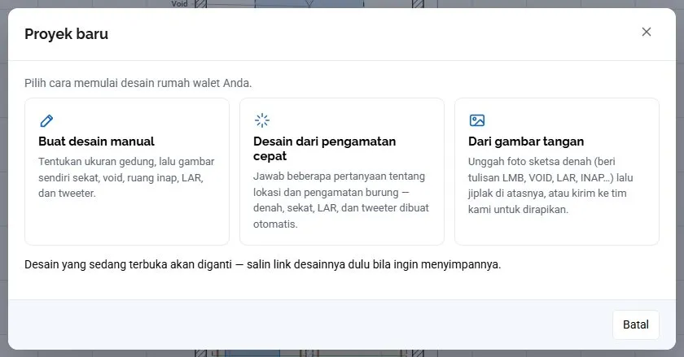
2.3Setelah denah jadi: daftar periksa
- Skor Analisis kelayakan tinggi dan tidak ada catatan merah.
- Semua ruang inap gelap (< 1 lux) di Cek lux; walet punya jalur cahaya dari ruang inap ke LMB.
- Ventilasi & suhu wajar di Cek udara; suara tarik/inap sesuai target di Cek dB.
- Semua tweeter punya kabel sampai Ruang audio; channel sudah diberi nama dan volume.
- Jalan-jalan di 3D (9.2), lalu cek RAB dan Presentasi untuk bahan diskusi.
Bab 3Mengenal Tampilan
Peta layar Walet Planner: bilah atas, tab lantai, katalog, kanvas denah, dan panel kanan.
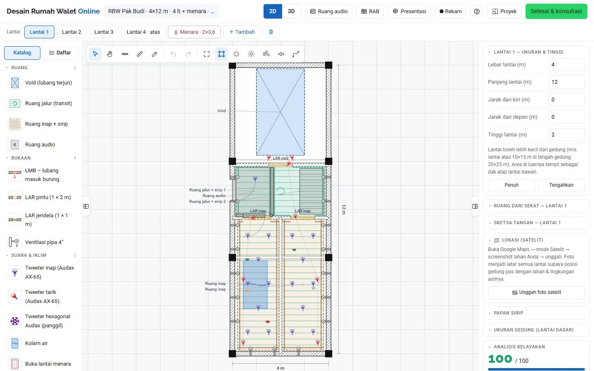
123456789- 2D / 3D — beralih antara editor denah dan pratinjau tiga dimensi.
- Ruang audio · RAB · Presentasi · Rekam — jendela khusus: pengaturan channel & ampli, tabel biaya, gambar presentasi & analisis lokasi, dan rekam layar.
- Selesai & konsultasi — kirim ringkasan dan tautan desain ke WhatsApp tim arsitek.
- Tab lantai — Lantai 1 sampai teratas, Menara, tombol tambah/salin/hapus lantai.
- Katalog — elemen yang bisa ditempatkan, dikelompokkan; tab Daftar untuk menyembunyikan/menyorot item.
- Bilah alat — pilih, geser, sekat, penggaris, coretan, undo/redo, dan mode simulasi.
- Kanvas denah — tempat menggambar; scroll untuk zoom.
- Panel kanan — properti objek terpilih, pengaturan lantai & gedung, hasil simulasi, dan Analisis kelayakan.
- Tombol sembunyikan panel — di pinggir kiri dan kanan kanvas; melapangkan denah.
3.1Bilah atas
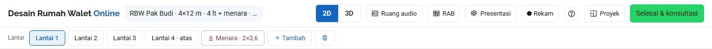
| Tombol | Fungsi |
|---|---|
| Nama proyek (kotak abu) | Klik untuk membuka Pengaturan proyek — ubah nama, kota, ukuran, tinggi lantai, dan jumlah lantai. |
| 2D · 3D | Beralih tampilan. Di 3D, alat 3D muncul di pojok kiri atas (Bab 9). |
| Ruang audio | Channel, ampli, volume dB, flashdisk, perangkat rak, jadwal timer (Bab 8). |
| RAB | Tabel rencana anggaran perlengkapan walet (Bab 11). |
| Presentasi | Tiga tab: Aksonometri, Analisis lokasi, Render realistis (Bab 10). |
| Rekam | Merekam layar/3D menjadi video .webm yang tersimpan di perangkat (9.3). |
| ? | Pahami fitur — ringkasan semua fitur di dalam aplikasi, lengkap dengan tautan ke buku panduan ini (baca online / unduh PDF). |
| Proyek | Folder proyek: simpan, buka, hapus, tambah proyek, dan keluar akun (4.2). |
| Selesai & konsultasi | Kirim ke WhatsApp tim arsitek; dari sini juga bisa mengunduh PDF dan menyalin tautan. |
3.2Katalog dan Daftar
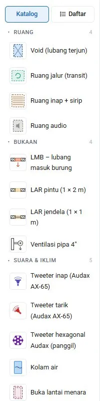
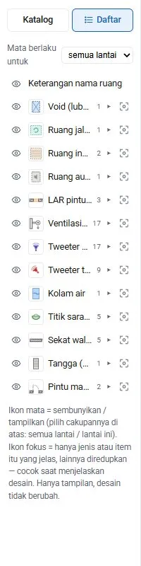
Katalog terbagi lima kelompok yang bisa dilipat: Ruang, Bukaan, Suara & iklim, Sarang (pemantauan), dan Struktur. Arahkan kursor ke sebuah elemen untuk membaca aturan singkatnya. Tab Daftar membantu saat denah ramai: sembunyikan jenis item tertentu (untuk semua lantai atau hanya lantai ini), sorot satu jenis, dan sembunyikan/tampilkan keterangan ruang di luar denah.
3.3Kanvas dan bilah alat
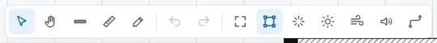
| Ikon | Alat | Fungsi |
|---|---|---|
| Panah | Pilih / geser objek V | Klik objek untuk memilih; seret untuk memindah; seret area kosong untuk memilih banyak objek. |
| Tangan | Geser tampilan H | Menggeser kanvas. Alternatif: tahan Spasi sambil menyeret, atau seret dengan tombol tengah/kanan mouse. |
| Sekat | Gambar sekat walet W | Klik-seret untuk menggambar sekat. |
| Penggaris | Ukur M | Klik-seret dua titik untuk membaca jarak; hasilnya tampil di kartu Penggaris dan bisa dihapus. |
| Pensil | Coretan C | Menggambar bebas dengan stylus/jari/mouse untuk menjelaskan (5.10). |
| Panah melengkung | Undo · Redo | Ctrl+Z / Ctrl+Y. |
| Empat sudut | Pas ke layar | Menyesuaikan zoom agar seluruh denah terlihat. |
| Kotak-kolom | Tampilkan kolom & balok | Menampilkan/menyembunyikan struktur (5.9). |
| Percikan | Isi otomatis lantai ini | Membuat ulang isi lantai aktif dari jawaban pengamatan cepat. |
| Matahari | Cek lux | Simulasi cahaya dari LMB (7.1). |
| Angin | Cek udara | Siklus udara, suhu & kelembapan per lantai (7.2). |
| Speaker | Cek dB | Sebaran suara tarik & inap per ruang (7.3). |
| Kabel | Kabel | Jalur kabel tweeter ke ruang audio + klem (7.4). |
3.4Panel kanan
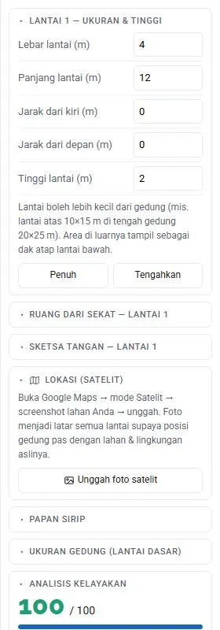
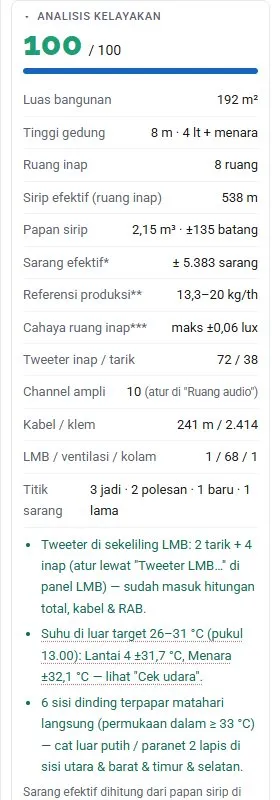
Isi panel kanan berubah menurut apa yang Anda pilih: objek (mis. ruang inap, LAR, LMB, tweeter tarik), sekat, atau beberapa objek sekaligus. Tiap kartu bisa dilipat dengan mengklik judulnya — pilihan lipat disimpan di perangkat. Saat sebuah mode simulasi menyala, kartu hasilnya muncul paling atas.
3.5Menyembunyikan panel dan memakai di HP
Dua tombol kecil di pinggir kiri dan kanan kanvas menyembunyikan panel katalog dan panel kanan agar denah lapang; tekan lagi untuk menampilkannya. Di layar sempit (HP), tata letak berubah menjadi susunan atas-bawah: bilah atas, tab lantai, katalog (geser ke samping), kanvas, lalu panel properti di bawah.
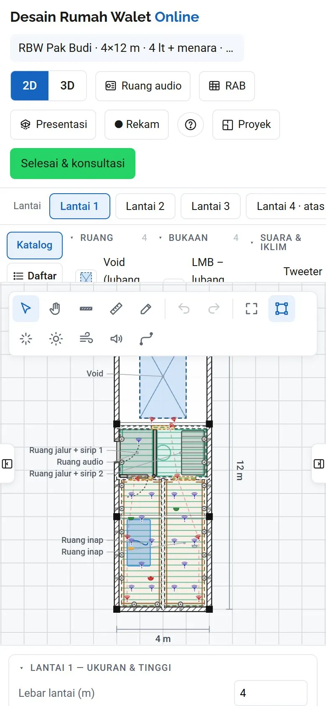
Bab 4Memulai Proyek
Masuk, mengelola folder proyek, dan tiga cara membuat denah pertama: manual, pengamatan cepat, atau gambar tangan.
4.1Masuk (login)
Walet Planner hanya bisa dibuka setelah masuk. Jendela Masuk Walet Planner muncul otomatis; isi nama pengguna dan kata sandi dari tim GedungWalet.com lalu tekan Masuk. Sesi tersimpan di perangkat sehingga Anda tidak perlu masuk lagi sampai memilih Keluar akun.
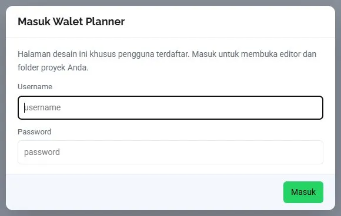
4.2Folder proyek
Tombol Proyek di bilah atas membuka Folder proyek: tempat menyimpan beberapa desain sekaligus di perangkat ini (maksimum 30).
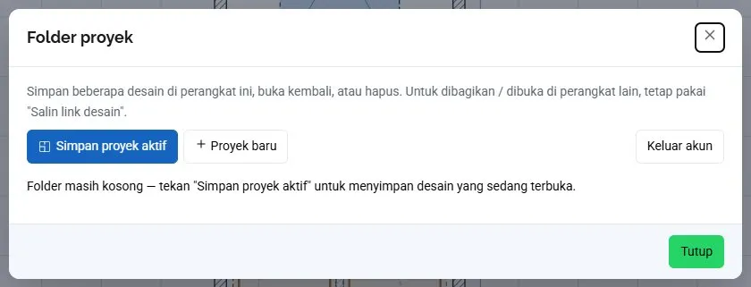
- Simpan proyek aktif — memberi nama lalu menyimpan desain yang sedang terbuka.
- Buka / Hapus pada tiap baris — membuka atau menghapus proyek tersimpan (desain yang sedang terbuka akan diganti saat Anda membuka proyek lain, jadi simpan dulu).
- Proyek baru — membuka jendela pilihan cara memulai (di bawah).
- Keluar akun — kembali ke layar masuk.
4.3Tiga cara membuat denah pertama
| Cara | Cocok untuk | Hasil |
|---|---|---|
| Buat desain manual | Yang sudah paham tata letak RBW dan ingin menggambar sendiri. | Denah kosong (hanya dinding luar) atau, bila kotak "Mulai dari tata letak dasar" dicentang, tata letak dasar yang siap disesuaikan. |
| Desain dari pengamatan cepat | Pemula; yang punya data lokasi (lingkungan, kelembapan, arah burung). | Denah lengkap otomatis + rekomendasi sesuai jawaban. |
| Dari gambar tangan | Yang sudah punya sketsa denah di kertas. | Foto sketsa menjadi latar untuk dijiplak, atau dikirim ke tim untuk dirapikan. |
a) Desain manual
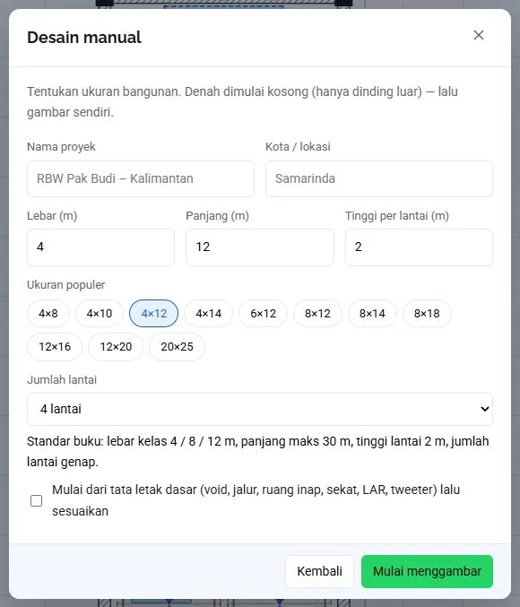
Isi nama proyek dan kota, lalu tentukan lebar (2–40 m), panjang (2–60 m), tinggi per lantai (1,8–4 m), dan jumlah lantai (1–8). Tombol Ukuran populer (4×12, 6×12, 8×14, 20×25, dan lainnya) mengisi lebar-panjang sekaligus.
b) Desain dari pengamatan cepat
Wizard empat langkah: Ukuran & lantai → Lingkungan lokasi → Pengamatan burung → Ringkasan. Jawaban Anda dipakai generator untuk membuat denah dan rekomendasi.
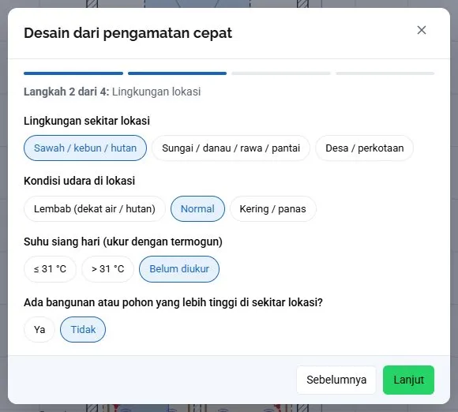
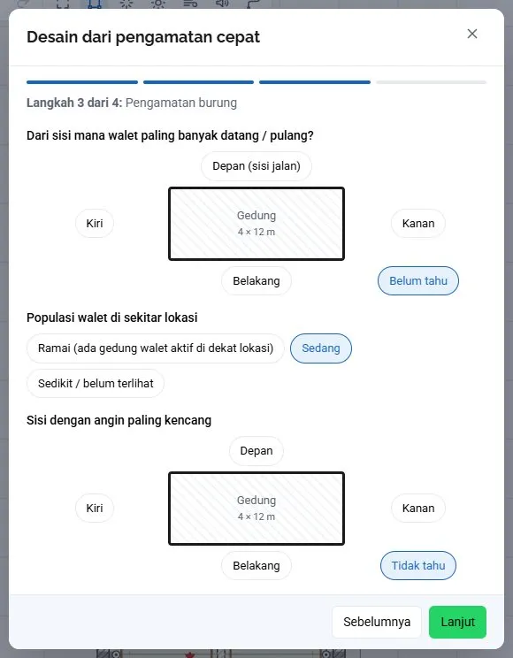
| Pertanyaan | Pilihan | Pengaruhnya |
|---|---|---|
| Lingkungan sekitar lokasi | Sawah/kebun/hutan · Sungai/danau/rawa/pantai · Desa/perkotaan | Menentukan profil suara (frekuensi & dB tarik/inap/panggil menurut tabel buku), rekomendasi ventilasi (mis. jangan menghadap laut), dan target di Cek dB. |
| Kondisi udara di lokasi | Lembab · Normal · Kering | Lembab: ventilasi tiap ±2 m & 1 kolam. Kering: kolam lebih banyak dan ventilasi tepat di atas kolam. Normal: sesuai luas lantai. |
| Suhu siang hari | ≤ 31 °C · > 31 °C · Belum diukur | Bila > 31 °C, muncul rekomendasi peredam panas (cat putih, paranet, foil di bawah atap). |
| Bangunan/pohon lebih tinggi di sekitar? | Ya · Tidak | "Ya" menaikkan menara menjadi ±3 m agar LMB & hexagonal tidak terhalang. |
| Sisi tempat walet paling banyak datang | Depan · Belakang · Kiri · Kanan · Belum tahu | Menentukan sisi LMB. "Belum tahu" = LMB sementara di depan dan muncul catatan untuk mengamati arah pulang walet. |
| Populasi walet sekitar | Ramai · Sedang · Sedikit | Dicatat di ringkasan pengamatan yang ikut terkirim saat konsultasi. |
| Sisi angin paling kencang | Depan · Belakang · Kiri · Kanan · Tidak tahu | Dicatat di ringkasan. Arah angin untuk simulasi diatur di kartu Siklus udara (atau diisi otomatis lewat Analisis lokasi). |
c) Dari gambar tangan
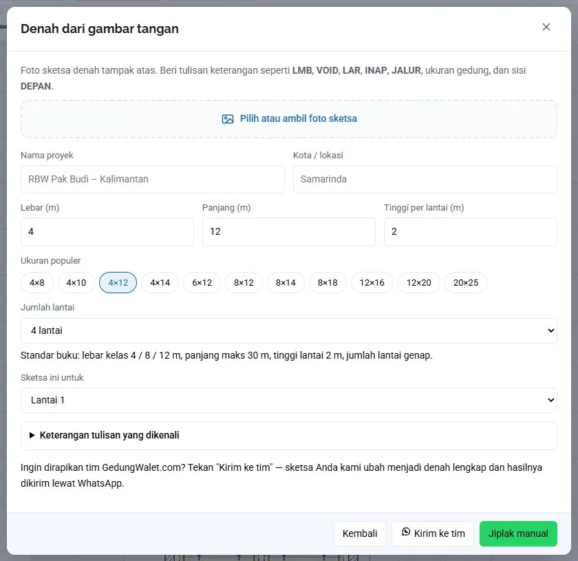
Foto sketsa denah tampak atas Anda (dengan tulisan seperti LMB, VOID, LAR, INAP, JALUR, ukuran gedung, dan sisi DEPAN) menjadi latar denah. Pilih lantai yang disketsa, lalu:
- Jiplak manual — foto dipasang di bawah kanvas; kalibrasi skala dengan dua titik lalu jiplak elemen dengan katalog. Foto tersimpan di perangkat (tidak ikut tautan/PDF).
- Kirim ke tim — foto dikirim lewat WhatsApp; tim GedungWalet.com merapikannya menjadi denah lengkap.
4.4Mengubah ukuran proyek kemudian
Klik nama proyek di bilah atas (atau kartu Ukuran gedung → Pengaturan proyek) untuk mengganti nama, kota, lebar, panjang, tinggi lantai, dan jumlah lantai. Elemen yang jatuh di luar batas baru akan dirapatkan; perubahan ini bisa di-Undo.
Bab 5Menggambar Denah
Cara menempatkan, memindah, dan mengatur setiap elemen walet — dari sekat dan ruang inap sampai LMB, tweeter, kolom, dan alat bantu.
5.1Dasar menggambar
Semua elemen ditempatkan dari Katalog di sisi kiri dan diubah lewat panel kanan. Satuan selalu meter; denah digambar tampak atas dengan bagian depan gedung di atas layar.
- Menempatkan. Klik satu elemen di Katalog (mis. Ruang inap + sirip), lalu klik di denah. Satu klik menempatkan satu elemen lalu alat kembali ke Pilih; tahan Shift saat mengklik untuk terus menempatkan elemen yang sama, dan tekan Esc atau V untuk berhenti.
- Memilih. Klik objek. Untuk banyak objek: tahan Shift lalu klik, atau seret di area kosong — seret kiri ke kanan memilih objek yang terliput penuh, seret kanan ke kiri memilih yang tersentuh.
- Memindah & mengubah ukuran. Seret objek untuk memindah; seret pegangan sudut/tepi untuk mengubah ukuran. Atau ketik angka di panel kanan (Lebar, Panjang, Posisi X, Posisi Y).
- Tombol di panel objek. Putar (R), Duplikat (Ctrl+D), Kunci (L, agar tidak sengaja bergeser), Hapus (Del).
- Zoom & geser. Scroll mouse untuk zoom; geser dengan alat Geser (H), tahan Spasi, atau tombol tengah/kanan mouse. Pas ke layar mengembalikan tampilan penuh.
- Undo / Redo. Ctrl+Z dan Ctrl+Y — hingga 60 langkah.
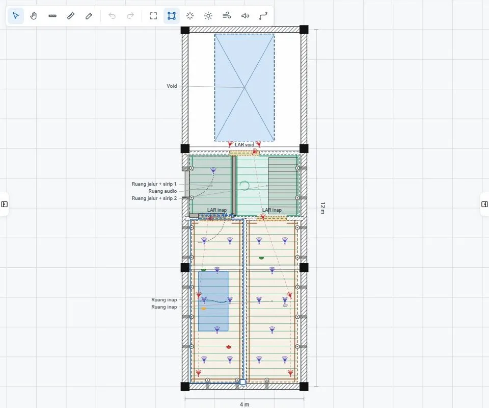
5.2Katalog elemen dan aturannya
Tabel berikut merangkum tiap elemen di Katalog beserta aturan singkat dari buku dan DED. Arahkan kursor ke elemen di aplikasi untuk membaca penjelasan lengkapnya.
| Kelompok | Elemen | Fungsi & aturan singkat |
|---|---|---|
| Ruang | Void (lubang terjun) | Lubang vertikal lurus dari atap ke lantai dasar — "lift" walet; posisi sama di tiap lantai, bebas hambatan, minimal 2×2 m (gedung 4×12: 2×4 m). |
| Ruang jalur (transit) | Lorong remang antara void dan ruang inap; justru paling lama ditempati burung — beri sirip dan tweeter inap juga; ikut dihitung sarang. | |
| Ruang inap + sirip | Kamar gelap (< 1 lux) tempat sarang. Bebas sekecil apa pun, tetapi tidak lebih besar dari 4×4 m — belah dengan sekat. | |
| Ruang audio | Ruang ampli/timer ±2 m²; boleh di dalam atau di luar gedung. Semua kabel tweeter berujung di sini. | |
| Bukaan | LMB | Di dinding luar lantai teratas / menara, menempel ke void. Lebar 40–70 cm, tinggi 50–70 cm (DED: 70×50 cm), dicat hitam, menghadap arah datang burung. |
| LAR pintu (1 × 2 m) | Bukaan setinggi 2 m pada sekat — akses void ↔ jalur ↔ ruang inap; otomatis memotong sekat. | |
| LAR jendela (1 × 1 m) | Bukaan 1×1 m di bagian atas sekat (bawahnya tertutup) — dipakai di lantai teratas untuk meredam cahaya LMB. | |
| Ventilasi pipa 4" | Paralon 4" bulat menembus dinding tiap ±1 m, 60 cm di bawah sirip; di dalam memakai elbow menghadap bawah + pipa turun 1 m. | |
| Suara & iklim | Tweeter inap (Audax AX-65) | Dipasang di papan sirip, menghadap jalan masuk ruang; pola per baris 2-1-2, 3-2-3, atau 4-3-4. |
| Tweeter tarik (Audax AX-65) | Di pojok ruang, kusen LAR, bibir void; selalu menghadap tweeter tarik di depannya (rantai menuju LMB). | |
| Tweeter hexagonal Audax (panggil) | 6 tweeter tersusun segi enam, mepet di atas LMB untuk memanggil walet dari luar. | |
| Kolam air | Di lantai dasar; target kelembapan 75–85% (batas 70–90%). | |
| Menara (rumah monyet) | Wajib bila tinggi gedung < 10 m; tinggi 2–3 m tepat di atas void, minimal 2×2 m; punya lantai sendiri (tab Menara). | |
| Sarang (pemantauan) | Titik sarang | Tanda posisi sarang di sirip: baru, lama, polesan, atau jadi. |
| Struktur | Sekat walet | Garis sekat terpal atau bata; penuh atau gantung. |
| Tangga (LAL) | Akses manusia antar lantai untuk panen — jangan lewat void. | |
| Pintu masuk | Pintu baja kunci ganda di lantai dasar, dekat ruang audio. |
5.3Lantai, menara, dan tinggi lantai
Tab di atas denah memilih lantai aktif. + Tambah menambah lantai di atas; Salin dari bawah (untuk lantai 2 ke atas) menyalin sekat, ruang, dan tweeter dari lantai di bawahnya ke lantai aktif; ikon tempat sampah menghapus lantai aktif. Kartu Lantai N — ukuran & tinggi mengatur lebar, panjang, posisi jarak dari kiri/depan, dan tinggi lantai tiap lantai secara terpisah.
- Penuh — lantai seukuran gedung.
- Tengahkan — lantai diperkecil dan diletakkan di tengah (proporsi DED 20×25 → 10×15 m untuk lantai teratas); area di luarnya tampil sebagai dak atap lantai bawah.
- Samakan lantai bawah — mengikuti ukuran dan posisi lantai di bawahnya.
Menara. Tekan tombol Menara (ikon menara) di deretan tab (atau klik elemen Menara di katalog) untuk membuat lantai menara tepat di atas void lantai teratas. LMB dan tweeter hexagonal dipasang pada dinding menara, bukan di lantai biasa.
5.4Sekat walet: terpal, bata, penuh, gantung
- Pilih Sekat walet di katalog atau tekan W. Klik-seret di denah — panjang tampil langsung; tahan Shift untuk sudut bebas (bawaan: tegak/mendatar).
- Klik sekat untuk memilihnya. Di panel kanan: ketik angka lalu Enter untuk mengubah Panjang (0° = ke kanan, 90° = ke atas), atur Sudut dan Titik awal/akhir, atau seret garis/titik ujung.
- Pilih Jenis: Penuh (lantai–plafon) atau Gantung (50 cm di bawah sirip; burung bisa lewat di bawahnya).
- Pilih Bahan: Terpal (arsir hitam; kabel bisa menembus) atau Bata / dinding (abu-abu pejal; kabel tidak menembus).
- Tambahkan bukaan dengan + LAR pintu atau + LAR jendela; sekat otomatis terpotong.
Ruang terbentuk dari sekat. Area yang dikelilingi sekat menjadi satu ruang; sekat yang ujungnya ≤ 25 cm dari dinding atau sekat lain dianggap tersambung. Kartu Ruang dari sekat mendaftar ruang, luas, jumlah pintu, dan berapa langkah ke void; ruang bebas bisa dijadikan inap dengan Jadikan inap. LAR dan celah di bawah sekat gantung berfungsi sebagai pintu — tweeter inap dan rantai tweeter tarik selalu lewat pintu itu.
5.5Ruang inap dan papan sirip
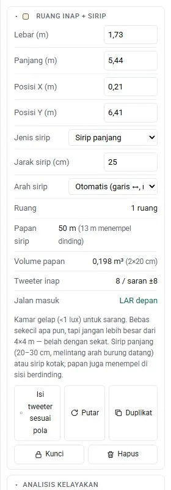
- Jenis sirip — Sirip panjang (papan melintang arah datangnya burung; jarak 20–30 cm, standar 25 cm) atau Sirip kotak (petak 30–60 cm). Papan juga dipasang menempel di semua sisi yang berdinding/bersekat.
- Arah sirip — Otomatis (melintang arah masuk) atau paksa garis ↔ / ↕.
- Tweeter inap — dibuat otomatis mengikuti pola per baris sirip tiap ±1 m: 2-1-2 (lebar ±1,5 m), 3-2-3 (2–3 m), 4-3-4 (4–5 m), semuanya menghadap jalan masuk. Bila Anda menghapus atau menggeser tweeter, tombol Isi tweeter sesuai pola mengembalikannya.
- Ruang jalur boleh diberi sirip (Sirip di ruang jalur: tanpa / panjang / kotak); sirip jalur ikut dihitung sarang.
Kartu Papan sirip (panel kanan, tanpa objek terpilih) mengatur ukuran papan untuk seluruh gedung:
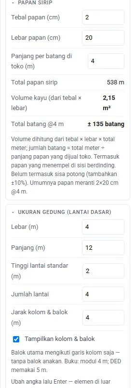
| Isian | Arti |
|---|---|
| Tebal papan (cm) | Bawaan 2 cm — dipakai untuk menghitung volume kayu (m³). |
| Lebar papan (cm) | Bawaan 20 cm (= tinggi sirip). |
| Panjang per batang di toko (m) | Bawaan 4 m. Total meter sirip dibagi panjang ini = jumlah batang papan yang harus dibeli (ditampilkan di analisis, RAB, dan PDF). |
5.6LMB, LAR, void, dan hexagonal
LMB — lubang masuk burung
Klik LMB di katalog lalu klik dekat dinding luar lantai teratas (atau lantai Menara); LMB menempel dan memotong dinding. Panel LMB menampilkan Tinggi LMB (cm), status menempel, Menghadap (arah kompas, mengikuti pengaturan arah hadap gedung), dan Tweeter LMB (tampak depan)….
Dialog tampak depan mengatur berapa tweeter tarik di bibir atas (DED: 2), inap di sisi kiri-kanan (DED: 4), dan inap di bawah. Jumlah ini otomatis masuk hitungan tweeter, kabel channel lantai itu, dan RAB.
Tweeter hexagonal
Letakkan dekat LMB (≤ 3 m) — hexagonal menempel otomatis mepet di atas LMB; bila belum, tekan Tempel ke LMB. Kabel hexagonal dihitung setinggi gedung + menara.
LAR — pintu dan jendela antar-ruang
Letakkan LAR pintu atau LAR jendela pada garis sekat (atau tambahkan lewat panel sekat). Di panel LAR, Bentuk LAR menukar pintu ↔ jendela dan Fungsi LAR — Otomatis (dibaca dari ruang yang dihubungkan) atau paksa LAR inap / jalur / void. Fungsi ini menentukan posisi LAR dalam rantai tweeter tarik.
Void
Void harus segaris di tiap lantai. Saat Anda menggambar lantai atas, bayangan garis putus biru menandai void lantai lain — pastikan sejajar. Void tidak boleh bertumpuk dengan ruang inap atau tangga (analisis akan memberi catatan). Di 3D, void tampak sebagai lubang pada pelat lantai.
5.7Tweeter tarik dan rantainya
Panel tweeter tarik memuat: Posisi rantai (otomatis atau paksa: Tarik LMB / LAR void / jalur / LAR inap / inap), Tweeter di depannya (otomatis atau pilih manual dari daftar terdekat — atau tarik garis dari pegangan corong ke tweeter tujuan langsung di denah), Arah hadap (otomatis menghadap tweeter depan, atau 8 arah), dan Jarak ke tweeter depan. Bila jaraknya > 5 m atau rantai menabrak sekat, statusnya merah dan tanda ✕ muncul — pindahkan tweeter atau buat rantai lewat LAR.
Tweeter inap berbeda: arahnya hanya empat (lurus depan/belakang/kiri/kanan) dan otomatis menghadap jalan masuk ruangnya; panelnya menyediakan Arah hadap bila ingin memaksa.
5.8Kolam, tangga, pintu, ventilasi, ruang audio, titik sarang
- Kolam air — di lantai dasar (tengah atau sudut), ventilasi tepat di atasnya. Sebagai perkiraan, satu kolam per ±50 m² lantai; area lembab cukup satu, area kering lebih banyak.
- Tangga (LAL) — akses manusia antar lantai; letakkan di luar void, dan tiap lantai berikutnya harus punya tangga di bawah lubangnya. Tinggi lantai 2 m memungkinkan panen tanpa tangga.
- Pintu masuk — menempel dan memotong dinding luar di lantai dasar, dekat ruang audio.
- Ventilasi pipa 4" — tempelkan ke dinding luar; kurangi jumlahnya di daerah lembab dan tidak perlu di area void. Jangan menghadap angin laut kencang.
- Ruang audio — luas ±2 m². Seret melewati batas lantai bila ingin menempatkannya di luar gedung. Tombol Buka Ruang audio di panelnya membuka pengaturan channel (Bab 8).
- Titik sarang — tandai sarang di sirip; pilih Jenis titik: baru, lama, polesan, jadi (warna berbeda). Di simulasi 3D, walet penghuni (punya titik sarang jadi/polesan/baru) langsung masuk LMB tanpa berputar dulu.
5.9Kolom dan balok
Kartu Ukuran gedung (lantai dasar) memuat isian Jarak kolom & balok (m) dan kotak Tampilkan kolom & balok (sama dengan ikon kolom di bilah alat).
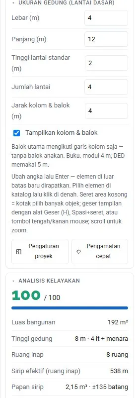
- Jarak bebas 1,5–8 m — Anda menentukan sendiri (bawaan 4 m sesuai modul buku; DED memakai 5 m). Kolom digambar sebagai kotak hitam di titik grid dan pada sudut lantai.
- Tanpa balok anakan — balok utama (garis ganda) hanya mengikuti garis kolom; tidak ada balok setengah modul.
- Struktur ini juga tampil di 3D dan pada gambar aksonometri.
5.10Alat bantu: penggaris, coretan, foto satelit
Penggaris
Tekan M lalu seret dari titik ke titik. Ujung penggaris menempel ke ujung sekat, sudut lantai, dan sudut/tengah objek; tahan Shift agar lurus mendatar/tegak. Hasilnya tampil di kartu Penggaris dan tidak ikut disimpan di desain.
Coretan pena
Tekan C lalu mencoret bebas dengan stylus, jari, mouse, atau trackpad untuk menjelaskan sesuatu ke klien.
- Ketebalan pena 1–14 px dan Warna.
- Mode penghapus — seret di atas coretan untuk menghapusnya.
- Pena sementara — coretan menghilang sendiri setelah 5–60 detik (dapat diatur).
- Hapus semua (lantai ini) membersihkan coretan di lantai aktif.
Foto satelit (Lokasi)
Kartu Lokasi (satelit): buka Google Maps → mode Satelit → screenshot lahan → Unggah foto satelit. Foto menjadi latar semua lantai dan tanah di 3D. Atur Lebar foto di denah (m) dan Kejelasan; Geser / perbesar foto menggeser fotonya (gedung tidak ikut bergeser) agar gedung pas di lahan; Putar 90° memutar. Foto hanya tersimpan di perangkat ini dan tidak ikut tautan desain.
Bab 6Analisis Kelayakan dan Aturan Desain
Cara membaca skor 0–100, catatan warna-warni, dan angka-angka aturan yang dipakai aplikasi.
6.1Kartu Analisis kelayakan
Di bagian bawah panel kanan, kartu Analisis kelayakan menampilkan skor 100 yang berkurang tiap kali ada pelanggaran aturan, disusul statistik desain dan daftar catatan.
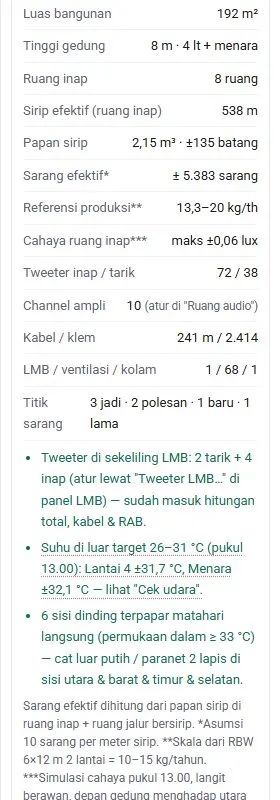
| Baris | Arti |
|---|---|
| Luas bangunan · Tinggi gedung | Jumlah luas semua lantai; tinggi total (lantai + menara). |
| Ruang inap · Sirip efektif · Papan sirip | Jumlah ruang inap; total meter sirip di ruang inap & jalur; volume kayu (m³) dan jumlah batang menurut panjang toko. |
| Sarang efektif* | Perkiraan dari meter sirip (asumsi 10 sarang/m, belum termasuk sisa potong ±10%). |
| Referensi produksi** | Skala kasar dari luas bangunan (contoh buku: RBW 6×12 m 2 lantai = 10–15 kg/tahun). |
| Cahaya ruang inap*** | Lux tertinggi di ruang inap pada simulasi (target < 1 lux). |
| Tweeter inap / tarik | Jumlah tweeter, termasuk yang di sekeliling LMB. |
| Channel ampli · Kabel / klem | Jumlah channel; total meter kabel dan jumlah klem (tiap 10 cm). |
| LMB / ventilasi / kolam | Jumlah masing-masing elemen. |
| Titik sarang | Rincian jenis: jadi, polesan, baru, lama. |
Catatan tampil dalam tiga warna: hijau (baik / rekomendasi), kuning (perhatian), merah (pelanggaran aturan yang mengurangi skor). Catatan yang bergaris bawah bisa diklik: aplikasi membuka lantai terkait dan menandai lokasinya dengan kotak merah berkedip di denah.
6.2Catatan yang sering muncul dan cara memperbaikinya
| Catatan (ringkas) | Yang perlu dilakukan |
|---|---|
| Belum ada void / void terlalu sempit / tidak segaris dengan lantai lain | Tambahkan void; lebarkan hingga ≥ 2×2 m (4×12: 2×4 m); geser agar sama posisinya di semua lantai. |
| Tangga di dalam void / ruang inap menumpuk dengan void | Pindahkan tangga atau ruang inap keluar dari void; pisahkan dengan sekat. |
| LMB tidak menempel dinding / tidak menempel void / bukan di lantai teratas | Tekan Tempel ke dinding; pasang LMB di lantai teratas atau menara, dekat void. |
| Tinggi gedung < 10 m → wajib menara | Tambahkan lantai Menara 2–3 m di atas void (min. 2×2 m). |
| Belum ada ruang inap + sirip / ruang inap > 4×4 m | Tambahkan ruang inap; belah ruang besar dengan sekat. |
| Belum ada sekat walet | Gambar sekat pemisah antara void, jalur, dan ruang inap. |
| Tweeter inap kurang / belum ada tweeter tarik | Tekan Isi tweeter sesuai pola; tambahkan tweeter tarik di pojok, kusen LAR, bibir void, dan bibir LMB. |
| Ruang void tertutup sekat tanpa LAR void | Pasang LAR di sekat pembatas void agar walet bisa masuk ke ruang lain. |
| Ventilasi kurang | Tambahkan pipa 4" tiap ±1 m (±2 m di area lembab), 60 cm di bawah sirip. |
| Belum ada kolam (lantai 1) | Letakkan kolam air di lantai dasar dengan ventilasi di atasnya. |
| Kabel channel terkurung sekat bata | Ganti bahan sekat menjadi terpal atau sediakan jalur kabel. |
| Tweeter belum tersambung channel ke ruang audio | Tambahkan/atur channel di Ruang audio sampai semua tweeter terhubung. |
| Suhu / kelembapan di luar target | Lihat Cek udara: tambah kolam/ventilasi; cat luar putih, paranet, foil di bawah atap. |
6.3Angka aturan yang dipakai
Angka berikut adalah acuan yang tertanam di aplikasi (bersumber dari buku Sukses Budidaya Walet Markaswalet dan DED RBW 20×25 GedungWalet.com). Angka yang tidak punya sumber ditandai asumsi.
| Aspek | Angka acuan |
|---|---|
| Kelas lebar gedung | 4 / 8 / 12 m (modul kolom 4 m; DED memakai 5 m); panjang maksimum 30 m |
| Tinggi | Lantai 2 m (batas 1,8–4 m); gedung 8–20 m; area terbuka berangin maks ±10 m; wajib menara bila < 10 m |
| Void | Sisi minimal 1 m; rekomendasi ≥ 2×2 m (4×12: 2×4 m; lebar ≥ 10 m: 4×4 m) |
| Ruang inap | Bebas kecil, maksimum 4×4 m; jumlah ruang per blok: lebar ≤ 5 m → 2, ≤ 9 m → 3, lebih → 4 (buku) |
| Sirip | Jarak 20–30 cm (standar 25); tinggi 15–20 cm; papan 2×20 cm; kotak 30–60 cm (asumsi lapangan) |
| LMB | Lebar 40–70 cm, tinggi 50–70 cm (DED 70×50 cm); 2 tarik di bibir atas + 4 inap di sisi |
| LAR | Pintu 1×2 m, jendela 1×1 m; lebar ideal 0,9–1,5 m |
| Ventilasi | Pipa 4" tiap ±1 m, 60 cm di bawah sirip |
| Iklim dalam | Suhu 26–31 °C; kelembapan 75–85% (batas 70–90%); ruang inap < 1 lux |
| Suara | Tweeter tarik maks 5 m antar-unit dan ±25 cm dari dinding; pola inap 2-1-2 / 3-2-3 / 4-3-4; baris sirip ±1 m; suara panggil hanya 05.00–19.00 |
| Ruang audio | ±2 m² (pemilik), boleh di dalam atau di luar gedung |
| Kabel | Klem tiap 10 cm; jalur selalu siku, menembus terpal, tidak menembus bata |
| Asumsi (tanpa sumber buku) | 10 sarang per meter sirip; 1 kolam per ±50 m²; harga RAB bawaan |
Bab 7Simulasi: Cahaya, Udara, Suara, Kabel
Empat mode di bilah alat yang membaca desain Anda dan menampilkan perkiraan: seberapa gelap ruang inap, bagaimana udara mengalir, sekeras apa suara, dan ke mana kabel berjalan.
Keempat mode dinyalakan dari bilah alat (ikon matahari, angin, speaker, kabel). Tiap mode menambahkan lapisan warna/garis di denah dan sebuah kartu di bagian atas panel kanan. Matikan dengan menekan ikonnya lagi. Semua hasil adalah perkiraan orde besaran — cocokkan dengan pengukuran di lokasi.
7.1Cek lux: seberapa gelap ruang inap
RBW tidak memakai lampu: satu-satunya cahaya adalah matahari yang masuk lewat LMB. Simulasi menghitung cahaya langsung dan cahaya yang menyebar dari ruang ke ruang, lalu mewarnai denah dari biru tua (< 0,01 lux, gelap) sampai jingga (≥ 1.000 lux, terang). Arahkan kursor ke denah untuk membaca lux di titik itu.
Atur kondisi cahaya di kartu Matahari & waktu:
- Depan gedung menghadap — arah kompas sisi depan gedung; menentukan LMB menghadap ke mana (LMB menghadap barat paling terang di sore hari, timur di pagi hari).
- Jam (05.00–19.00), Bulan, dan Langit (Cerah / Berawan / Mendung).
- Info otomatis: posisi matahari, cahaya di luar (lux), dan apakah LMB terkena sinar langsung.
- Panah jingga = jalur cahaya yang dicari anakan walet saat belajar terbang: dari tiap ruang, melalui pintunya, ke ruang yang lebih terang, sampai keluar LMB.
- Ruang inap buntu (✕) = anakan tidak menemukan arah terang ke LMB — sambungkan lewat LAR ke jalur yang remang menuju void.
- Kartu Cek lux — simulasi cahaya mendaftar lux tiap ruang per lantai; angka merah = ruang inap yang lebih terang dari 1 lux.
7.2Cek udara: aliran, suhu, dan kelembapan
Aplikasi memodelkan tiap ruang sebagai satu zona dan tiap bukaan (ventilasi, LMB, LAR) sebagai orifis, digerakkan oleh efek cerobong (udara hangat naik) dan tekanan angin — pendekatan yang sama dengan perangkat lunak aliran udara bangunan (CONTAM / EnergyPlus AirflowNetwork). Pola yang benar untuk RBW: ventilasi = udara masuk, LMB = udara keluar saat udara di dalam lebih hangat.
| Isian di kartu Siklus udara | Fungsi |
|---|---|
| Suhu dalam (°C) · Kelembapan dalam (%) | Kondisi udara di dalam gedung (bawaan 28 °C, 85%). |
| Angin datang dari · Kecepatan angin (m/s) | Sisi gedung yang dihantam angin dan kecepatannya. |
| Suhu luar rata-rata (°C) · Kelembapan luar (%) | Iklim udara luar (bawaan 29 °C dan 75%). Untuk lokasi Anda, isi otomatis lewat Presentasi → Analisis lokasi → Terapkan ke simulasi (10.2). |
Di bawahnya terdapat tabel pertukaran udara per ruang (× per jam); merah = di bawah 0,5×/jam (pengap). Kartu Suhu & kelembapan per lantai menampilkan perkiraan suhu dan RH tiap lantai serta dinding yang panas kena matahari langsung (permukaan dalam ≥ 33 °C) — beserta saran peredamnya.
7.3Cek dB: seberapa keras suara di tiap ruang
dB di tengah ruang dihitung dari volume channel pada jarak 1 m, dikurangi pelemahan jarak dan penghalang: sekat bata ±22 dB, terpal ±10 dB, sekat gantung ±4 dB; bukaan LAR tidak menghalangi. Suara juga mengikuti jadwal timer (ruang audio). Target ditampilkan menurut lingkungan yang Anda pilih di pengamatan cepat (sawah/kebun, sungai/rawa/pantai, atau desa/perkotaan); ruang yang di luar target diberi tanda.
7.4Kabel: jalur, panjang, dan klem
Jalur kabel dibuat otomatis untuk tiap channel: selalu siku — lurus sepanjang baris tweeter lalu belok satu sudut antar baris — mengikuti alur sirip, menembus sekat terpal tetapi tidak menembus dinding bata. Titik ujung menandai tweeter terakhir, huruf R menandai riser (naik-turun antar lantai) menuju ruang audio (garis abu-abu). Hasil: total meter kabel dan jumlah klem (satu tiap 10 cm).
| Tombol di kartu | Fungsi |
|---|---|
| Ikon mata | Menyembunyikan/menampilkan jalur channel itu di denah. |
| ✏️ | Menggambar jalur kabel sendiri untuk channel di lantai aktif: klik titik-titik (otomatis siku; tahan Shift untuk bebas), Enter atau klik ganda untuk selesai, Esc membatalkan. |
| ⨯ | Menghapus jalur otomatis lantai ini agar benar-benar digambar manual (tidak dihitung sampai Anda menggambarnya). |
| ↩ / 🗑 | Mengembalikan jalur otomatis / menghapus jalur manual. |
| Tampilkan semua channel | Bila dicentang, daftar memuat channel semua lantai; bila tidak, hanya lantai aktif. |
| Atur channel | Membuka Ruang audio. |
7.5Simulasi burung dan kenyamanan ruang
Di tampilan 3D (Bab 9), walet disimulasikan: berputar di luar, terpanggil hexagonal, masuk lewat LMB (kadang berputar dulu di void), mengejar suara tarik, lalu menyebar ke ruang. Kartu Simulasi burung — kenyamanan ruang menilai tiap ruang inap dari kegelapan, jarak dari LMB, adanya suara tarik & inap, jalur keluar anakan, dan pertukaran udara — hijau = nyaman, kuning = kurang, merah = tidak nyaman (burung cepat meninggalkan ruang yang tidak nyaman). Jumlah walet diatur di kartu Matahari & waktu.
Bab 8Ruang Audio
Mengatur channel, ampli, volume, suara Markaswalet, perangkat rak, jadwal timer — termasuk gambar tampak depan ruang audio.
Klik Ruang audio di bilah atas (atau tombol Buka Ruang audio di panel ruang audio / kartu simulasi). Jendela ini punya tiga bagian: tabel channel, gambar tampak depan rak, dan daftar perangkat & jadwal.
8.1Channel: satu channel = satu volume
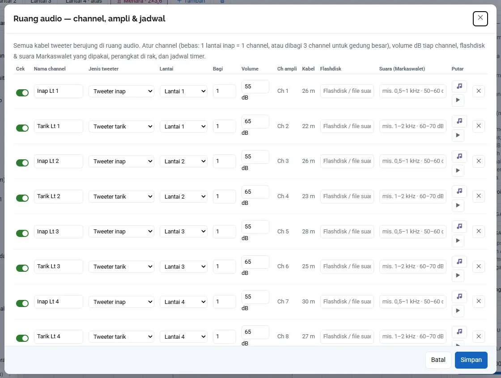
| Kolom | Fungsi |
|---|---|
| Cek | Mengaktifkan/mematikan channel di simulasi dan RAB. |
| Nama channel | Bebas (mis. "Inap Lt 1"). |
| Jenis tweeter | Tweeter inap, tweeter tarik, atau hexagonal (panggil). |
| Lantai | Satu lantai, Semua lantai, atau gabungan beberapa lantai (mis. gedung kecil: 2 lantai untuk 1 channel). |
| Bagi | Membagi satu lantai menjadi beberapa channel (gedung besar). |
| Volume (dB) | Keluaran dB tweeter pada jarak 1 m. Nilai ini yang dipakai Cek dB. Volume yang Anda atur juga tercermin pada kenop ampli di gambar. |
| Ch ampli · Kabel | Nomor channel pada ampli dan panjang kabelnya (dari hasil mode Kabel). |
| Flashdisk · Suara (Markaswalet) | Catatan isi flashdisk dan frekuensi/dB suara yang dipakai (mis. 0,5–1 kHz · 50–60 dB untuk inap). |
| Putar | Ikon not = unggah file suara Anda sendiri untuk channel itu; segitiga = putar/hentikan. Tweeter yang sedang "berbunyi" ditandai lingkaran berdenyut di denah. File suara hanya tersimpan di perangkat ini. |
Di bawah tabel ada tombol + Tambah channel dan Susun otomatis per lantai (membuat channel inap & tarik untuk tiap lantai). Sebagai standar: satu lantai inap = satu channel, ditambah channel tarik dan channel panggil (hexagonal); untuk gedung besar satu lantai dapat dibagi tiga channel.
8.2Gambar tampak depan dan perangkat rak
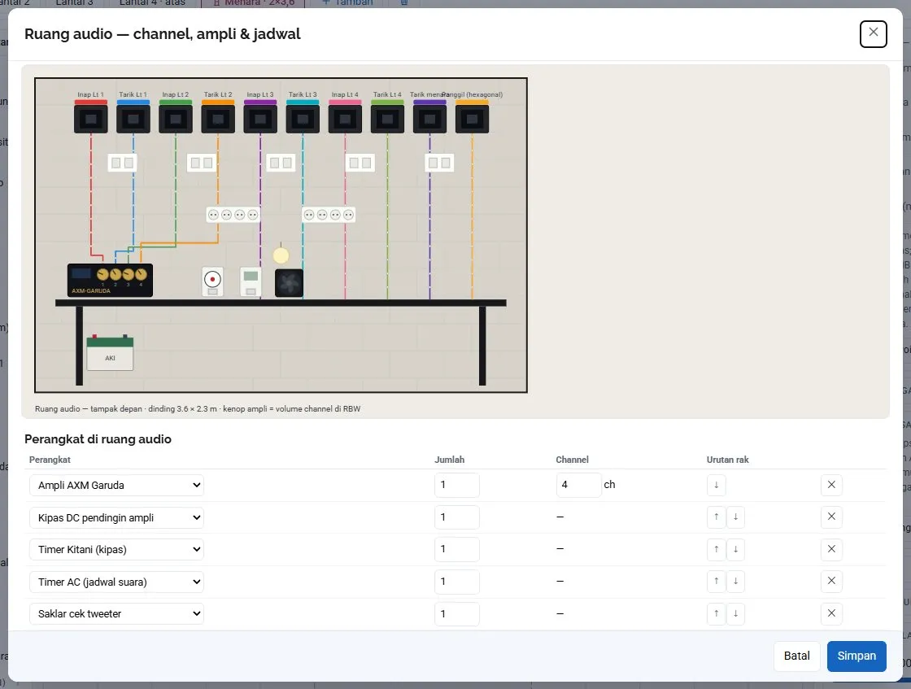
Gambar 2D tampak depan (dinding 3,6 × 2,3 m) meniru rak nyata dan bisa diisi dari katalog: tombol + Tweeter tes, + Saklar, + Stop kontak, + Ampli AXM, + Piro 88, + Piro 89, + Timer Kitani, + Timer AC, + Kipas DC, + Aki, + Lampu, dan Susun otomatis (menata semua sesuai rak standar). Yang perlu diketahui:
- Kenop ampli = channel. Tiap kenop bernomor; kabel tiap tweeter (di bagian atas) turun tegak, belok siku pada jalur bertingkat, lalu jatuh tepat ke kenop channel-nya — sehingga jelas channel mana menyambung tweeter mana. Klem digambar tiap 10 cm.
- Ampli yang tersedia: Ampli AXM Garuda (4 channel), Ampli Piro 88 (8), Ampli Piro 89 (8) — bentuk dan label mengikuti produk aslinya.
- Perangkat pendukung: Kipas DC pendingin ampli, Timer Kitani (kipas), Timer AC (jadwal suara), Saklar cek tweeter, Stop kontak, Aki mobil (cadangan listrik), Flashdisk suara, Lampu ruang audio, serta tweeter kontrol tarik/inap di dinding.
- Menata rak. Seret perangkat di gambar untuk memindah (halaman dialog tidak melompat saat Anda menyeret). Tweeter tes + Saklar cek tweeter dipakai untuk menguji satu tweeter dari ruang audio.
- Daftar Perangkat di ruang audio — pilih jenis, jumlah, dan channel (untuk ampli); tombol ↑ ↓ mengatur urutan rak; + Tambah perangkat menambah baris. Jumlah perangkat ikut masuk RAB.
8.3Jadwal timer suara
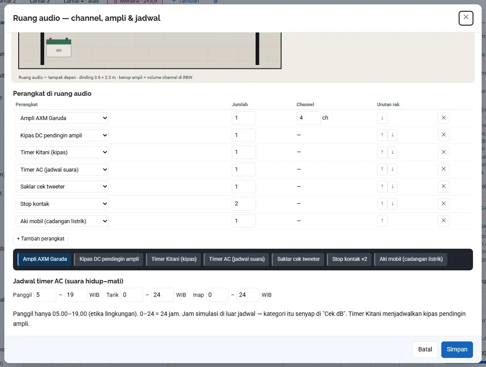
Bagian bawah dialog mengatur jam nyala tiap jenis suara (Panggil, Tarik, Inap, dalam WIB). Bawaan: panggil hanya 05.00–19.00 (etika lingkungan sesuai buku), tarik dan inap 24 jam. Jadwal ini dipakai oleh Cek dB — ruang yang suaranya "mati oleh timer" pada jam simulasi diberi tanda.
8.4Tweeter di sekeliling LMB
Susunan tweeter di bibir dan sisi LMB (default DED: 2 tarik atas + 4 inap sisi) diatur lewat panel LMB → Tweeter LMB (tampak depan)… (5.6). Jumlahnya otomatis masuk channel lantai itu.
Bab 9Tampilan 3D
Memutar bangunan, memisahkan lantai, melihat simulasi burung dan udara, berjalan di dalam (bisa naik-turun lantai), dan merekam.
Tekan 3D di bilah atas. Bangunan dibangun dari denah Anda — setiap perubahan di 2D langsung tercermin. Seret untuk memutar, scroll untuk zoom, seret dengan tombol kanan untuk menggeser.
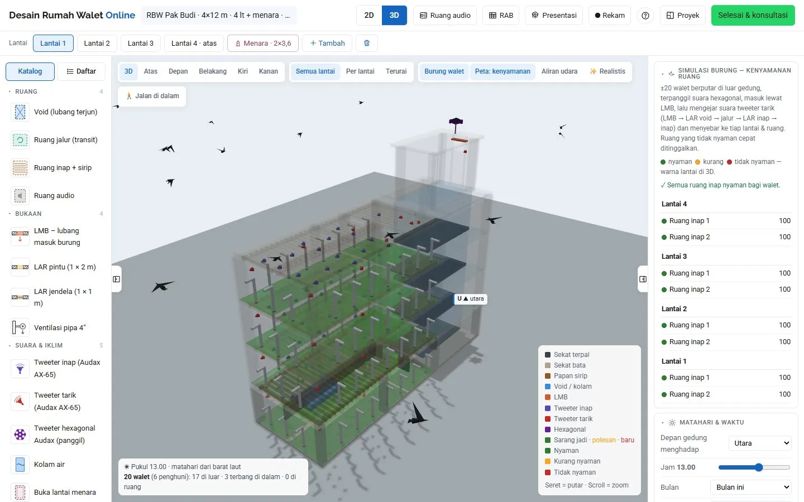
9.1Alat tampilan 3D
| Kelompok | Tombol | Fungsi |
|---|---|---|
| Kamera | 3D · Atas · Depan · Belakang · Kiri · Kanan | Sudut pandang siap pakai. |
| Mode lantai | Semua lantai · Per lantai · Terurai | Semua lantai menampilkan seluruh bangunan (lantai aktif transparan); Per lantai hanya lantai aktif; Terurai menarik tiap lantai ke atas agar isinya terlihat. |
| Simulasi | Burung walet · Peta · Aliran udara | Burung menyalakan simulasi walet; Peta bergantian kenyamanan → lux → mati; Aliran udara menampilkan partikel udara masuk/keluar. |
| Kualitas | ✨ Realistis | Tekstur beton/kayu/bata, bayangan lembut, dan pencahayaan sinematik. |
| Berjalan | 🚶 Jalan di dalam | Mode berjalan di dalam bangunan (di bawah). |
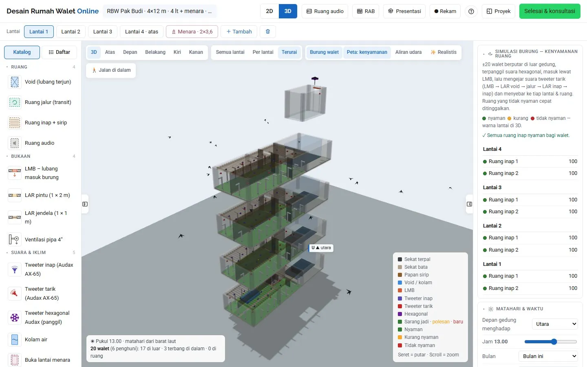
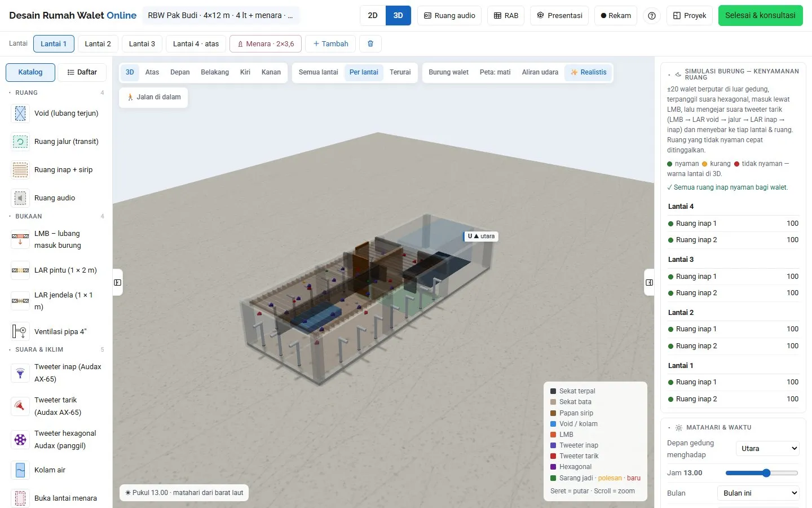
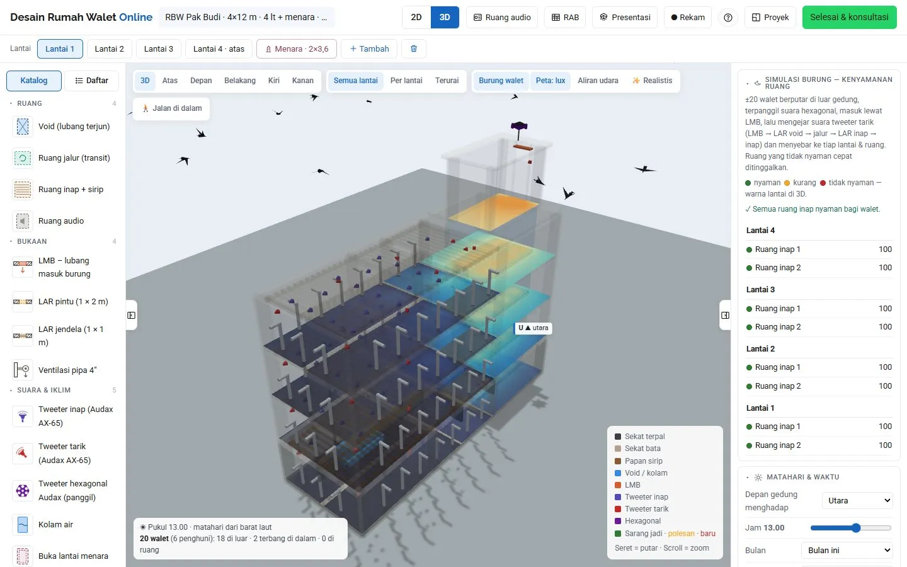
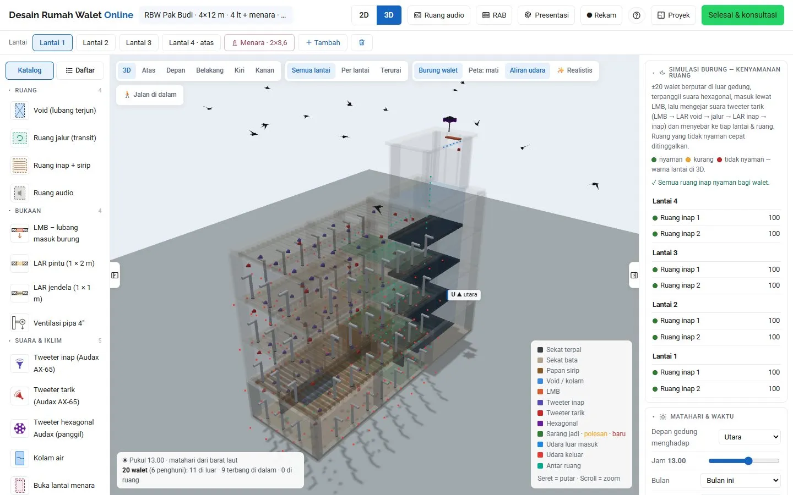
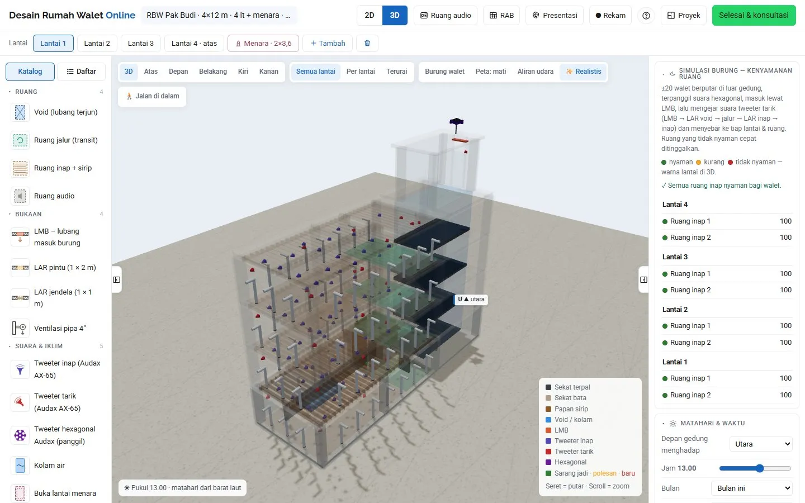
9.2Berjalan di dalam bangunan
Tekan 🚶 Jalan di dalam: Anda berjalan di dalam gedung dengan tinggi mata yang bisa diatur. Gelap-terangnya mengikuti simulasi lux — ruang inap sungguh gelap, sehingga senter berguna; garis oranye menyala menandai rantai tweeter tarik yang sinkron.
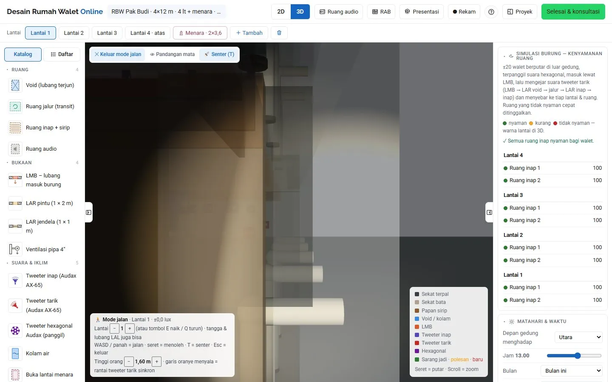
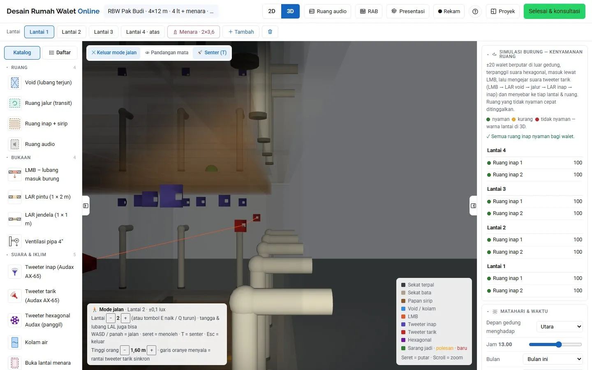
| Aksi | Cara |
|---|---|
| Maju / mundur / geser | W S A D atau tombol panah; tahan Shift untuk berlari (3 m/dtk; jalan biasa 1,5 m/dtk). |
| Menoleh | Seret di layar 3D (mouse/jari). |
| Senter | T atau tombol 🔦 Senter — menembus gelap. |
| Naik / turun lantai | E naik, Q turun (atau PageUp / PageDown), atau tombol − / + di samping "Lantai" pada panel status. Tangga dan lubang LAL tetap bisa dipakai. |
| Tinggi orang | Tombol − / + di panel status (1,3–2,0 m). |
| Sudut pandang | Tombol Pandangan mata ↔ Orang ketiga (sosok manusia berjalan, kamera mengikuti dari belakang). |
| Keluar | Esc atau ✕ Keluar mode jalan. |
9.3Merekam layar
Tombol Rekam di bilah atas merekam tampilan menjadi video .webm yang tersimpan langsung di perangkat (folder Unduhan). Di tampilan 3D, perekam mengambil langsung dari kanvas 3D; di 2D, browser meminta Anda memilih tab/layar yang direkam. Tekan tombol lagi (kini bertuliskan Berhenti & simpan) untuk mengakhiri. Untuk video interior yang mulus tanpa menggerakkan mouse, pakai Render realistis (10.3).
Bab 10Presentasi: Aksonometri, Analisis Lokasi, Render
Tombol Presentasi membuka tiga tab untuk bahan diskusi dan presentasi kepada klien: gambar aksonometri exploded, analisis lokasi dari titik Google Maps, dan video render realistis.
Klik Presentasi di bilah atas. Di bagian atas jendela terdapat tiga tab: Aksonometri, Analisis lokasi, dan Render realistis. Pengaturan tiap tab tersimpan di desain dan ikut tautan (versi penuh).
10.1Aksonometri exploded
Gambar aksonometri (isometri 30°) yang "membongkar" bangunan: tiap lantai atau lapisan ditarik ke atas dengan garis bantu putus-putus, lalu diberi garis keterangan berisi nama dan spesifikasinya — gaya diagram arsitek untuk presentasi.
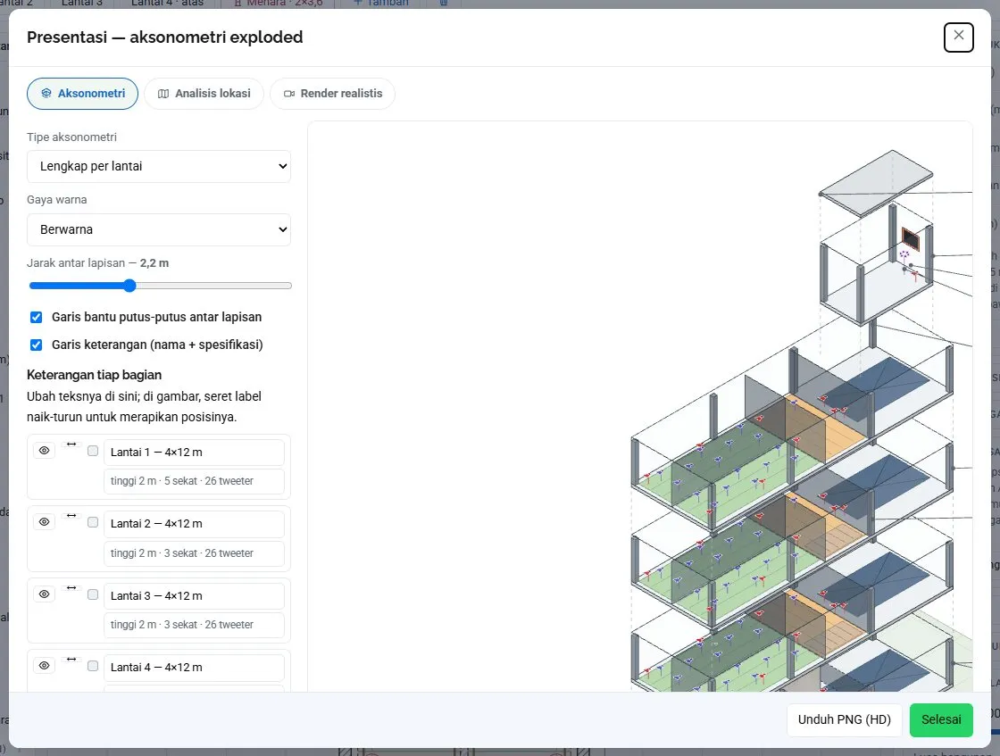
| Pengaturan | Pilihan |
|---|---|
| Tipe aksonometri | Lengkap per lantai (tiap lantai berisi plat, sekat, kolom, void, tweeter, LMB, sarang) · Interior (tata ruang) · Eksterior (massa bangunan) dengan LMB di fasad, atap, dan arah hadap · Breakdown item (satu lapisan per kategori). |
| Gaya warna | Berwarna · Monokrom teknis · Sketsa hangat. |
| Jarak antar lapisan | Slider 0–6 m; makin besar makin "terbongkar". |
| Garis bantu putus-putus antar lapisan | Menampilkan/menyembunyikan garis sudut antar lapisan. |
| Garis keterangan (nama + spesifikasi) | Menampilkan/menyembunyikan seluruh keterangan. |
Detail item. Setiap item digambar sesuai bentuk dan datanya: papan sirip dengan jarak dan arah sesungguhnya (standar 25 cm), tweeter berbentuk corong AX-65 yang menghadap arahnya, LMB berkusen dengan lubang hitam, hexagonal dengan 6 corong, titik sarang berbentuk cangkir, kolam beriak, tangga beranak tangga, ventilasi pipa, dan kolom & balok sesuai jarak yang Anda atur.
Mengedit keterangan
Takut ada teks yang salah atau posisi garis kurang pas? Semua keterangan bisa diedit di daftar Keterangan tiap bagian (panel kiri):
- Judul & spesifikasi — klik kotak teks dan ketik ulang; gambar langsung berubah. Mengetik ulang teks yang sama persis dengan bawaan mengembalikannya ke teks otomatis.
- Ikon mata — menyembunyikan keterangan yang tidak perlu.
- Tombol sisi (↔ / ◀ / ▶) — memilih keterangan tampil di sisi otomatis, kiri, atau kanan gambar.
- Geser di gambar — seret sebuah label naik-turun untuk merapikan posisinya.
- Kembalikan teks & posisi bawaan — mengembalikan keterangan untuk tipe yang sedang dipilih.
Tombol Unduh PNG (HD) menyimpan gambar beresolusi tinggi (3×), dan lembar Aksonometri presentasi tersedia di ekspor PDF (12.3).
10.2Analisis lokasi dari titik Google Maps
Tab ini membuat lembar analisis tapak (site analysis) ala diagram arsitek: 12 panel yang membaca lingkungan sekitar lahan — jalan & kebisingan, bangunan, matahari, angin, hujan, topografi, suhu & kelembapan, ekologi, sumber bising, kendala & peluang, dan skor kelayakan lokasi — lengkap dengan saran untuk desain RBW.
Langkah memakai
- Buka lokasi lahan di Google Maps. Klik kanan tepat di titik bangunan → klik koordinat yang muncul (otomatis tersalin), atau salin tautan panjang dari bilah alamat.
- Buka Presentasi → tab Analisis lokasi, tempel koordinat/tautan di kotak (contoh:
-6.2334, 106.8342), lalu tekan Analisis. - Tunggu ±10–60 detik: aplikasi mengambil 5 sumber data secara berurutan dan menampilkan kemajuannya. Hasil muncul sebagai 12 kartu.
- Baca tiap kartu dan bagian Implikasi untuk desain RBW di bawahnya.
- Tekan Terapkan ke simulasi agar data lokasi mengisi pengaturan simulasi (lihat di bawah), lalu Unduh PNG lembar bila ingin menyimpan gambarnya.
maps.app.goo.gl/… tidak memuat koordinat. Buka dulu tautan itu di browser, lalu salin koordinat (klik kanan titiknya) atau tautan panjang dari bilah alamat.Dari mana datanya?
Titik lokasi dari Google Maps Anda; datanya sendiri diambil dari sumber terbuka yang gratis dan tanpa kunci: OpenStreetMap (jalan, sungai, tutupan lahan, bangunan, sekolah, pasar, tempat ibadah, industri, rel, bandara, dan nama permukiman terdekat) serta Open-Meteo (elevasi dan iklim 12 bulan terakhir: angin, suhu, kelembapan, curah hujan). Data Google sendiri tidak dipakai karena API-nya berbayar dan memerlukan kunci.
Membaca 12 kartu
| Kartu | Isi | Cara memanfaatkan |
|---|---|---|
| Lokasi & konteks | Peta permukiman terdekat (radius 6 km, skala akar), koordinat, elevasi, kota/kecamatan terdekat, tipe iklim. | Gambaran letak tapak; tipe iklim Schmidt–Ferguson (A sangat basah … H sangat kering). |
| Konteks bangunan | Peta kepadatan bangunan radius 260 m (1 kotak = 20 m), jumlah, tutupan %, bangunan terdekat & tertinggi. | Bangunan ≥ 3 lantai dekat tapak dapat menghalangi jalur terbang — naikkan menara/LMB. |
| Akses & jalan (kebisingan) | Peta jalan radius 500 m, perkiraan dB(A) di tapak, jalan terdekat beserta sisi gedung yang menghadapnya. | Jauhkan LMB & void dari sisi bising; pasang sekat bata di sisi itu. |
| Jalur matahari | Busur matahari (21 Jun / ekuinoks / 21 Des), waktu terbit-terbenam, sisi gedung paling terpapar sore & pagi. | Jangan hadapkan LMB ke sinar sore; beri peredam pada sisi terpanas. |
| Angin | Mawar angin dua semester (Nov–Apr dan Mei–Okt), arah dominan, kecepatan tipikal, sisi gedung yang dihantam. | Atur arah ventilasi; hindari LMB menghadap angin kencang. |
| Air & curah hujan | Batang hujan per bulan, total tahunan, bulan basah/lembab/kering, risiko genangan. | Tinggikan lantai dasar dan buat drainase bila risiko sedang/tinggi. |
| Topografi | Grid elevasi 7×7 (150 m), kemiringan %, arah air mengalir, posisi tapak terhadap sekitar. | Letakkan pintu & ruang audio di sisi lahan yang lebih tinggi. |
| Suhu & kelembapan | Suhu maks/min dan RH tiap bulan dibandingkan target ruang (26–31 °C; 75–85%). | Tentukan kebutuhan kolam, ventilasi, dan peredam panas. |
| Ekologi (radius 1 km) | Persentase air/sawah/hutan/permukiman, sungai terdekat, indeks pakan serangga dan tingkat kepercayaan data. | Perkiraan ketersediaan pakan; pilih profil suara yang sesuai lingkungan. |
| Sumber bising & aktivitas | Sekolah, masjid/musala, pasar, SPBU, pabrik, rel, bandara — jumlah, jarak terdekat, arah. | Perhatikan bising sesaat dan atur jadwal suara. |
| Kendala & peluang | Daftar otomatis dari seluruh data. | Ringkasan untuk diskusi. |
| Skor kelayakan lokasi | Skor 0–100 dari 6 faktor berbobot dan label penilaian. | Indikatif; lihat tabel di bawah. |
Skor kelayakan lokasi
| Faktor | Bobot | Dinilai dari |
|---|---|---|
| Kebisingan | 25% | dB(A) perkiraan di tapak dari semua jalan terdekat (asumsi tingkat bunyi per kelas jalan dan pelemahan jarak). |
| Sumber pakan | 25% | Persentase sawah/air/hutan dan jarak sungai, dikurangi permukiman; dilunakkan bila peta OSM belum lengkap. |
| Suhu & kelembapan | 15% | Kedekatan RH luar dengan 80% dan suhu maksimum rata-rata terhadap batas 31 °C. |
| Air & genangan | 15% | Lahan datar, sungai < 400 m, posisi tapak rendah, curah hujan tinggi. |
| Angin | 10% | Kecepatan tipikal (terlalu kencang menurunkan nilai). |
| Konteks bangunan | 10% | Kepadatan bangunan dan ada tidaknya bangunan tinggi dekat tapak. |
Skor ≥ 78 berlabel Sangat layak, ≥ 65 Layak dengan penyesuaian, ≥ 50 Perlu perhatian khusus, di bawahnya Berisiko. Skor baru dihitung bila data cukup (bobot terhitung ≥ 60%).
Terapkan ke simulasi
Tombol ini mengisi otomatis: lintang matahari; arah & kecepatan angin simulasi (sisi gedung yang dihantam angin dominan); suhu luar rata-rata, amplitudo, dan kelembapan luar yang dipakai Cek udara; serta jawaban pengamatan cepat (lingkungan, kelembapan, suhu siang, ada bangunan tinggi, sisi angin). Semuanya bisa dikoreksi manual setelahnya, dan dibatalkan dengan Undo.
Bila sebagian data gagal
Server gratis kadang menolak atau lambat (mis. saat ramai). Kartu yang datanya belum ada menampilkan "data belum ada". Tekan Analisis ulang — hanya bagian yang kurang yang diambil ulang. Bila tetap gagal, coba lagi beberapa menit kemudian.
10.3Render realistis dengan jalur kamera
Fitur ini menerbangkan kamera menyusuri bagian dalam RBW mengikuti jalur yang Anda gambar sendiri — bisa naik-turun ke semua lantai — lalu merekamnya menjadi video. Cocok untuk presentasi kepada pemilik/investor.
- Buka Presentasi → tab Render realistis → tekan ✏️ Gambar jalur kamera. Jendela menutup dan denah siap digambari.
- Klik titik-titik urutan jalan kamera di denah. Boleh mulai dari luar gedung (di depan pintu) agar video dibuka dengan mendekati bangunan. Garis biru bernomor menunjukkan jalur.
- Untuk naik/turun lantai, pindah tab lantai di atas denah lalu lanjut mengklik titik berikutnya. Titik lantai lain tampak pudar berlabel "Lt 1" dan garis antarlantai diberi tanda ⬆ naik / ⬇ turun.
- Tekan Enter atau klik ganda untuk selesai (Esc membatalkan). Maksimum 40 titik. Jendela Render realistis terbuka lagi dengan ringkasan jalur: jumlah titik, panjang, durasi, dan lantai yang dilewati.
- Atur Kecepatan kamera (0,6–3 m/detik) dan Tinggi kamera (1,2–2,2 m). Centang Rekam video (file .webm otomatis tersimpan) dan Kualitas realistis.
- Tekan ▶ Mulai render. Tampilan pindah ke 3D dan kamera terbang mulus mengikuti jalur. Esc menghentikan kapan saja (video yang sudah terekam tetap tersimpan).
Hasilnya: kamera dimulai dari pintu masuk, menembus ruang jalur, naik ke lantai atas, dan menyusuri ruang inap. Tekstur beton, plester, kayu, dan bata; bayangan lembut; serta pencahayaan sinematik. Gelap-terang tetap mengikuti simulasi lux, dan lampu kamera menembus ruang gelap.
Bab 11RAB Perlengkapan Walet
Tabel rencana anggaran biaya perlengkapan yang jumlahnya dihitung otomatis dari desain.
Klik RAB di bilah atas. Setiap baris berisi Nama item, Jumlah, Harga satuan (Rp), Harga total, dan Keterangan; di bawahnya ada TOTAL.
- Baris abu-abu (otomatis) — jumlahnya dihitung dari desain: papan sirip (m³ meranti, termasuk sisa potong ±10%), sekat terpal (m²), sekat bata (m²), tweeter inap/tarik, tweeter hexagonal, kabel (m), klem, ventilasi (titik), kolam, pintu baja, sarang polesan, serta perangkat ruang audio (ampli, kipas, timer, saklar, stop kontak, aki, flashdisk…). Anda hanya bisa mengubah harga satuan dan keterangan.
- Baris tambahan (bebas) — + Tambah baris untuk item lain (nama, jumlah, satuan, harga, keterangan bebas); ✕ menghapusnya.
- Salin tabel (untuk Excel/WA) — menyalin seluruh tabel sebagai teks bertab siap ditempel ke Excel atau WhatsApp.
- Kembalikan harga perkiraan — mengembalikan semua harga satuan ke nilai bawaan.
Bab 12Menyimpan, Membagikan, dan Konsultasi
Tautan desain, folder proyek, PDF multi-lembar, dan cara mengirim desain ke tim arsitek lewat WhatsApp.
12.1Penyimpanan otomatis dan Folder proyek
Desain yang sedang dikerjakan tersimpan otomatis di browser setiap ada perubahan. Untuk menyimpan beberapa versi atau proyek, pakai Proyek → Simpan proyek aktif (4.2).
12.2Tautan desain
Seluruh desain dapat dikemas menjadi satu tautan yang dibuka siapa saja di browser (halaman gedungwalet.com/desain/#d=…) — tanpa berkas dan tanpa akun penyimpanan. Tautan dibuat dari tombol Selesai & konsultasi → Salin link desain.
- Yang ikut tautan penuh: ukuran & lantai, seluruh isi denah, menara, pengaturan simulasi (arah hadap, jam, angin, iklim luar), channel, ruang audio & layoutnya, jalur kabel manual, RAB, jawaban pengamatan, papan sirip, pengaturan Presentasi (termasuk keterangan yang Anda edit dan jalur kamera), serta ringkasan analisis lokasi.
- Yang tidak ikut (tersimpan di perangkat saja): foto satelit, foto sketsa, file suara, coretan pena, dan hasil penggaris.
- Pesan WhatsApp memakai tautan versi ringan (lokasi hanya berupa koordinat dan tanpa data presentasi) supaya pesan tidak terlalu panjang; desainnya tetap utuh.
12.3Ekspor PDF multi-lembar
Dari Selesai & konsultasi → Unduh PDF muncul jendela Ekspor PDF — pilih lembar. Tiap lembar berformat A4 landscape, berisi gambaran semua lantai untuk satu tema, dilengkapi penjelasan, angka ringkas, dan legenda; resolusinya tinggi (±255 dpi) sehingga tetap tajam saat diperbesar.
| Lembar | Isi |
|---|---|
| Denah suara tarik / suara inap | Tweeter, rantai tarik, dan kabel channel masing-masing. |
| Denah papan sirip · tata ruang · void | Sirip & jumlah kayu; alur ruang; jalur terbang void. |
| Denah & isi ruang audio | Tampak depan ruang audio, channel, perangkat, jadwal timer. |
| Denah pencahayaan (lux) · ruangan ternyaman · inap vs jalur · ventilasi · suara dB per ruang | Hasil simulasi per lantai dengan legenda; memakai pengaturan simulasi saat ini. |
| Denah lengkap gabungan + 3D | Semua lantai, gambar 3D, dan ringkasan. |
| Aksonometri presentasi (exploded) | Gambar aksonometri sesuai pengaturan tab Aksonometri. |
| Analisis lokasi (site analysis) | Dua halaman: 12 panel + implikasi untuk desain. |
| Analisis kelayakan | Skor, statistik, dan catatan. |
| RAB perlengkapan | Tabel biaya. |
Tekan Buat PDF; kemajuan ditampilkan pada tombol, dan file Desain-RBW-<nama>-<n>lembar.pdf otomatis terunduh. Tombol Centang semua dan Kosongkan mempercepat pemilihan.
12.4Selesai & konsultasi (WhatsApp)
- Tekan Selesai & konsultasi di bilah atas.
- Isi Nama Anda, Kota lokasi rumah walet, dan Catatan untuk arsitek (opsional, mis. "lahan di pinggir sawah, sudah ada gedung tetangga").
- Periksa Ringkasan dan pratinjau tiap lantai.
- Tekan Kirim ke WhatsApp: WhatsApp terbuka dengan pesan siap kirim ke tim GedungWalet.com (0852 3535 0662) berisi ringkasan desain, skor, catatan penting, dan tautan desain. Tekan kirim di WhatsApp.
Setelah konsultasi, tim mengirimkan file desain lengkap (denah, 3D, rekomendasi) ke WhatsApp Anda. Unduh PDF dan Salin link desain tersedia di jendela yang sama.
Bab 13Contoh Alur Kerja
Dua skenario nyata: merancang RBW 4×12 m dari nol sampai konsultasi, dan membandingkan beberapa calon lokasi sebelum membeli lahan.
13.1Kasus A — RBW 4×12 m untuk Pak Budi (Kediri)
Pak Budi punya lahan kecil dan ingin RBW 4 lantai. Berikut urutan kerja yang disarankan; angka hasil di bawah berasal dari desain contoh di buku ini dan akan berbeda pada desain Anda.
- Mulai. Masuk → Desain dari pengamatan cepat: 4×12 m, 4 lantai, tinggi lantai 2 m; lingkungan Sawah / kebun / hutan; udara Normal; sisi datang burung Belum tahu → Buat desain otomatis.
- Kenali hasilnya. Klik Lantai 1–4 dan Menara. Denah berisi void 2×3,6 m, ruang jalur, dua ruang inap bersirip per lantai, LAR, tweeter, ventilasi, kolam, tangga, ruang audio, dan LMB di menara (Bab 1 · Bab 5).
- Beri identitas. Klik nama proyek → isi nama "RBW Pak Budi" dan kota Kediri.
- Sesuaikan. Ubah dinding ruang audio menjadi bata (pilih sekat → Bahan: Bata / dinding) agar tertutup rapat; geser kolam bila perlu.
- Baca skor. Kartu Analisis kelayakan menunjukkan skor 100/100 dengan luas 192 m², 8 ruang inap, sirip efektif 538 m, ±135 batang papan @4 m, 72 tweeter inap + 38 tarik (Bab 6).
- Cek simulasi. Cek lux: semua ruang inap ±0,06 lux (< 1 lux ✓) dan ada jalur cahaya ke LMB. Cek udara: ventilasi = masuk, LMB = keluar ✓. Cek dB: sesuai target. Kabel: ±241 m dan 2.414 klem (Bab 7).
- Ruang audio. Beri nama tiap channel, atur volume (inap 55 dB, tarik 65 dB pada 1 m), lalu susun rak tampak depan (Bab 8).
- 3D. Nyalakan ✨ Realistis, putar bangunan, lalu 🚶 Jalan di dalam dan tekan E untuk naik lantai (Bab 9).
- Analisis lokasi. Presentasi → Analisis lokasi: tempel koordinat lahan. Untuk titik contoh di pusat kota Kediri, skor lokasi 60 ("perlu perhatian khusus") terutama karena bising jalan ±67 dB(A) dari sisi tertentu — saran: bata di sisi itu dan LMB dijauhkan. Tekan Terapkan ke simulasi (10.2).
- Presentasi. Buat aksonometri Lengkap per lantai dan Breakdown item, edit keterangan yang perlu, lalu gambar jalur kamera dan ▶ Mulai render untuk video (Bab 10).
- Biaya. Buka RAB, sesuaikan harga satuan dengan harga kota Anda (Bab 11).
- Simpan & kirim. Proyek → Simpan proyek aktif; Selesai & konsultasi → Unduh PDF (16 lembar bila semua dicentang) → Kirim ke WhatsApp (Bab 12).
13.2Kasus B — Membandingkan calon lokasi
Anda punya tiga kandidat lahan dan ingin tahu mana yang paling menjanjikan sebelum membeli.
- Ambil koordinat tiap lahan dari Google Maps (klik kanan → koordinat).
- Buat satu proyek per lokasi: Proyek → Proyek baru → desain manual dengan ukuran yang sama (mis. 4×12 m, 4 lantai).
- Di tiap proyek buka Presentasi → Analisis lokasi, tempel koordinat, tekan Analisis, lalu Simpan proyek aktif dengan nama lokasi.
- Bandingkan Skor kelayakan lokasi, Kendala & peluang, dan Implikasi untuk desain ketiganya. Perhatikan faktor berbobot besar: kebisingan dan sumber pakan.
- Cek langsung di lapangan untuk lokasi terbaik: populasi walet sekitar, kebisingan nyata, riwayat banjir, dan kelengkapan peta (kartu Ekologi menampilkan tingkat kepercayaan data).
- Setelah memilih, tekan Terapkan ke simulasi lalu lanjutkan merancang; kirim hasilnya lewat Selesai & konsultasi.
Bab 14Tanya Jawab dan Pemecahan Masalah
Jawaban singkat untuk hal-hal yang paling sering ditanyakan.
Tombol baru (mis. Presentasi) tidak bisa diklik / tampilan terasa lama
Browser masih memakai berkas versi lama dari cache. Muat ulang paksa: Ctrl+F5 (Windows) atau Cmd+Shift+R (Mac). Di HP: hapus cache situs atau buka lewat tab penyamaran. Setelah itu tombol berfungsi.
Tampilan 3D kosong / tidak muncul
Pastikan browser terbaru dan akselerasi perangkat keras (hardware acceleration) aktif; 3D membutuhkan WebGL. Coba Chrome atau Edge. Koneksi internet juga diperlukan saat pertama kali memuat pustaka 3D. Bila di HP lambat, kurangi jumlah walet (kartu Matahari & waktu) atau matikan tombol Burung walet dan Peta.
Data/desain saya hilang
Desain tersimpan di browser perangkat itu. Data hilang bila cache/data situs dibersihkan, memakai jendela penyamaran, atau berganti perangkat/browser. Cegah dengan Proyek → Simpan proyek aktif dan simpan tautan desain (Selesai & konsultasi → Salin link desain) di catatan atau WhatsApp Anda sendiri.
Analisis lokasi gagal atau lama
Data diambil dari server gratis yang kadang penuh atau menolak sesaat. Tekan Analisis ulang — hanya bagian yang belum berhasil yang diambil. Bila masih gagal, tunggu beberapa menit dan coba lagi; matikan VPN/pemblokir bila ada. Pastikan koordinat benar (tautan pendek maps.app.goo.gl tidak berisi koordinat).
Skor lokasi terasa tidak sesuai kenyataan
Skor adalah perkiraan. Bila peta OpenStreetMap di daerah Anda belum memetakan sawah/kebun/hutan, kartu Ekologi menampilkan "tak terpetakan" dan tingkat kepercayaan rendah — nilai pakan otomatis diredam menuju netral. Utamakan pengamatan lapangan; gunakan skor sebagai bahan diskusi.
PDF gagal dibuat atau ada lembar kosong
Coba dari komputer/laptop dengan browser terbaru, kurangi lembar yang dicentang (lembar simulasi dan 3D paling berat), lalu ulangi. Satu lembar yang gagal tidak menggagalkan yang lain — halaman pengganti tetap dibuat. Foto satelit dan sketsa tangan memang tidak ikut ke PDF.
Suara tidak berbunyi saat tombol Putar ditekan
Browser mensyaratkan interaksi (klik) sebelum memutar audio — tekan tombol putar langsung dari halaman. Pastikan file suara sudah diunggah (ikon not) dan volume perangkat tidak dibisukan. File suara hanya tersimpan di perangkat ini.
Kabel channel tidak terhubung / kabel nol meter
Periksa bahwa ada Ruang audio di denah dan channel di jendela Ruang audio mencakup lantai itu. Kabel tidak menembus sekat bata — ganti menjadi terpal atau gambar jalur manual (✏️). Bila Anda menekan ⨯ (hapus jalur otomatis), jalur harus digambar manual atau dikembalikan dengan ↩.
Tweeter tarik bertanda ✕ atau rantai putus
Rantai tidak boleh menembus sekat dan jarak antar-tweeter maksimum 5 m. Pindahkan tweeter agar berada di kusen LAR/bibir void, tambahkan tweeter di tengah, atau pilih Tweeter di depannya secara manual.
Ruang inap terlalu terang di Cek lux
Cahaya masuk lewat void dan LAR. Tambahkan sekat penuh dan LAR jendela (1×1 m) di lantai teratas, perkecil LMB, atau ubah arah hadap gedung agar LMB tidak menghadap matahari sore. Pastikan ruang inap tidak menumpuk dengan void.
Skor turun tetapi saya tidak tahu penyebabnya
Gulir kartu Analisis kelayakan ke daftar catatan; klik catatan bergaris bawah untuk melihat lokasinya (kotak merah berkedip). Tabel di 6.2 menjelaskan tiap catatan dan cara memperbaikinya.
Bagaimana memindahkan desain ke perangkat lain?
Pakai tautan desain: Selesai & konsultasi → Salin link desain, kirim ke perangkat lain, lalu buka. Foto satelit, sketsa, suara, dan coretan tidak ikut tautan — unggah ulang bila perlu.
Apakah hasilnya boleh dipakai sebagai gambar IMB / gambar kerja?
Tidak. Hasilnya konsep untuk konsultasi. Gambar kerja dan perhitungan struktur dibuat oleh arsitek/insinyur setelah survei lokasi. Hubungi tim GedungWalet.com untuk pengembangan lebih lanjut.
Bisakah saya meminta fitur baru atau melaporkan kesalahan?
Bisa. Kirim pesan ke WhatsApp 0852 3535 0662 beserta tangkapan layar dan tautan desain Anda.
Lampiran APintasan Keyboard dan Mouse
Semua tombol pintas dalam satu tabel.
| Aksi | Pintasan |
|---|---|
| Pilih / geser objek | V |
| Alat Geser tampilan | H — atau tahan Spasi sambil menyeret; atau seret dengan tombol tengah/kanan mouse |
| Alat Sekat | W |
| Penggaris | M |
| Coretan pena | C |
| Undo / Redo | Ctrl+Z / Ctrl+Y |
| Duplikat objek terpilih | Ctrl+D |
| Pilih semua | Ctrl+A |
| Hapus | Del atau Backspace |
| Putar item terpilih | R |
| Kunci / buka kunci | L |
| Batal / berhenti alat / lepas pilihan | Esc |
| Menempatkan beberapa elemen berturut-turut | Tahan Shift saat mengklik di denah |
| Menggambar sekat dengan sudut bebas | Tahan Shift saat menyeret |
| Selesai menggambar jalur (kabel / kamera) | Enter atau klik ganda |
| Zoom denah / 3D | Scroll mouse |
| Memutar tampilan 3D | Seret di layar 3D |
Mode jalan di dalam (3D)
| Aksi | Pintasan |
|---|---|
| Maju / mundur / geser | W S A D atau tombol panah |
| Berlari | Tahan Shift |
| Menoleh | Seret di layar |
| Senter | T |
| Naik / turun lantai | E / Q atau PageUp / PageDown |
| Keluar mode jalan / hentikan render | Esc |
Lampiran BGlosarium
Istilah yang dipakai di aplikasi dan buku ini.
| Istilah | Penjelasan |
|---|---|
| Aksonometri (exploded) | Gambar isometri yang "membongkar" bangunan: lapisan/lantai ditarik ke atas dengan garis bantu, diberi keterangan. |
| Ampli | Penguat suara di ruang audio (AXM Garuda, Piro 88, Piro 89); tiap kenop = satu channel. |
| Channel | Saluran ampli yang menghidupkan sekelompok tweeter dengan satu volume. |
| DED | Detail Engineering Design — di sini gambar acuan RBW 20×25 GedungWalet.com. |
| dB / dB(A) | Satuan tingkat bunyi; dB(A) = terboboti telinga manusia, dipakai untuk kebisingan lingkungan. |
| Hexagonal | Tweeter panggil 6 corong tersusun segi enam, dipasang mepet di atas LMB. |
| Klem | Penjepit kabel; dipasang tiap 10 cm. |
| LAL | Lubang Antar Lantai untuk manusia (tangga). |
| LAR | Lubang Antar Ruang pada sekat (pintu 1×2 m / jendela 1×1 m); dilalui walet dan rantai tweeter tarik. |
| LMB | Lubang Masuk Burung di dinding luar lantai teratas atau menara. |
| Lux | Satuan intensitas cahaya; ruang inap ditargetkan < 1 lux. |
| Menara (rumah monyet) | Lantai kecil di atas void tempat LMB & hexagonal dipasang; wajib bila tinggi gedung < 10 m. |
| RAB | Rencana Anggaran Biaya. |
| RBW | Rumah Burung Walet. |
| RH | Kelembapan relatif udara; target ruang 75–85%. |
| Riser (R) | Jalur kabel vertikal yang naik/turun antar lantai menuju ruang audio. |
| Ruang inap / jalur | Kamar gelap tempat sarang / lorong remang antara void dan ruang inap. |
| Schmidt–Ferguson | Klasifikasi iklim berdasar perbandingan bulan kering (< 60 mm) dan basah (> 100 mm); tipe A (sangat basah) sampai H (luar biasa kering). |
| Sekat terpal / bata; penuh / gantung | Bahan: terpal (kabel tembus) atau bata (tidak tembus). Jenis: penuh lantai–plafon atau gantung 50 cm di bawah sirip. |
| Sirip | Papan kayu melintang tempat sarang menempel; jarak standar 25 cm. |
| Titik sarang | Penanda sarang di sirip: baru, lama, polesan, jadi. |
| Tweeter tarik / inap | Speaker AX-65: tarik menuntun walet masuk (rantai menuju LMB); inap menahan di ruang inap. |
| Void | Lubang vertikal lurus dari atap ke lantai dasar; jalur terbang naik-turun walet. |
Lampiran CSumber Data dan Batasan
Dari mana angka-angka di aplikasi berasal, dan apa yang perlu diingat saat memakainya.
C.1Aturan desain
- Buku Sukses Budidaya Walet (Markaswalet) — sebagian besar angka pada 6.3; nomor halaman dicatat di dalam aplikasi.
- DED RBW 20×25 GedungWalet.com — konvensi gambar (sekat berarsir = terpal, garis ganda = balok), LMB 70×50 cm dengan 2 tarik + 4 inap, channel ampli per lantai.
- Ketentuan pemilik (GedungWalet.com): ruang audio ±2 m² boleh di dalam/luar, ruang inap maksimum 4×4 m, klem kabel tiap 10 cm.
- Angka bertanda asumsi (mis. 10 sarang per meter sirip, harga RAB bawaan) tidak bersumber dari buku.
C.2Analisis lokasi
- © OpenStreetMap contributors (lisensi ODbL, openstreetmap.org/copyright) — jalan, sungai, tutupan lahan, bangunan, fasilitas, permukiman; diakses lewat Overpass API.
- Weather data by Open-Meteo.com (CC BY 4.0) — elevasi (model medan) dan arsip cuaca 12 bulan (reanalisis ERA5, Copernicus/ECMWF).
- Google Maps hanya dipakai sebagai sumber titik koordinat yang Anda salin; tidak ada data Google yang diambil aplikasi.
C.3Teknologi
Walet Planner berjalan sepenuhnya di browser Anda. Tampilan 3D memakai Three.js; tautan desain dikompres dengan LZ-String. Desain, foto, dan file suara Anda tidak diunggah ke server GedungWalet.com kecuali Anda mengirimnya sendiri lewat WhatsApp.
Lampiran DKontak dan Dukungan
Butuh bantuan menggunakan Walet Planner atau ingin melanjutkan desain menjadi bangunan?
- WhatsApp: 0852 3535 0662 (tim arsitek GedungWalet.com).
- Situs: gedungwalet.com — layanan pembangunan gedung walet di seluruh Indonesia.
- Walet Planner: gedungwalet.com/desain.
- Versi terbaru buku ini: gedungwalet.com/desain/panduan/.